<title>EARF Brand Book</title>
<meta name="claude:viewport-fit-sides" content="cover">
<link rel="preconnect" href="https://fonts.googleapis.com">
<link rel="preconnect" href="https://fonts.gstatic.com" crossorigin>
<link rel="stylesheet" href="https://fonts.googleapis.com/css2?family=IBM+Plex+Mono:wght@400;500&family=Instrument+Sans:wght@400..700&display=swap">
<style>
/* A showroom bound as a book: paper and ink, as earf.world sets them, and the color carried only by the acrylic.
   One light theme by choice (the site's own: every picture stands on a pale ground), with night bands where the
   bar and the glow need them. Chapters run down one column; pictures break out to the full width. */
:root {
  --page: #F4F1EC; --paper: #ECE8E1; --ink: #1C1A18; --muted: #5E5A53; --rule: #D6D0C6;
  --night: #100F12; --night-2: #1A1918; --night-ink: #EDE7DD; --night-muted: #A79F93; --night-rule: #2E2B27;
  --ember: #9B0000; --dust: #E5732A; --acid: #E9B320; --poison: #376621; --ice: #4A90C8; --haze: #543287; --fog: #F6F8F8; --smoke: #34323A;
  --sans: 'Instrument Sans', 'Helvetica Neue', Arial, sans-serif; --mono: 'IBM Plex Mono', 'Courier New', monospace;
  --measure: 64ch; --wide: 1240px;
  color-scheme: light;
}
* { box-sizing: border-box }
html { scroll-behavior: auto }
@media (prefers-reduced-motion: reduce) { html { scroll-behavior: auto } }
body { margin: 0; background: var(--page); color: var(--ink); font: 400 17px/1.6 var(--sans); -webkit-font-smoothing: antialiased }
img { max-width: 100%; display: block; height: auto }
a { color: inherit; text-underline-offset: 3px }
a:focus-visible, button:focus-visible { outline: 2px solid var(--ink); outline-offset: 3px }
h1, h2, h3, h4 { margin: 0; font-weight: 600; text-wrap: balance }
p { margin: 0 }

.band { padding-left: max(16px, env(safe-area-inset-left, 0px)); padding-right: max(16px, env(safe-area-inset-right, 0px)) }
.in { max-width: var(--wide); margin: 0 auto }
.night { background: var(--night); color: var(--night-ink) }
.night .eyebrow, .night .muted, .night figcaption, .night .no { color: var(--night-muted) }
.night .rule { border-color: var(--night-rule) }
.paper { background: var(--paper) }

.eyebrow { font: 500 12px/1.3 var(--mono); letter-spacing: .14em; text-transform: uppercase; color: var(--muted) }
.muted { color: var(--muted) }
.lede { font-size: clamp(19px, 2.1vw, 23px); line-height: 1.45; max-width: 52ch; letter-spacing: -.005em }
.prose { display: grid; gap: 16px; max-width: var(--measure) }
.mono { font-family: var(--mono) }
figure { margin: 0; display: grid; gap: 10px; min-width: 0 }
figcaption { font-size: 14px; color: var(--muted); line-height: 1.45 }
figcaption b { font-weight: 600; color: var(--ink) }
.night figcaption b { color: var(--night-ink) }
.render { font: 500 10.5px/1 var(--mono); letter-spacing: .1em; text-transform: uppercase; border: 1px solid currentColor; border-radius: 2px; padding: 3px 5px; white-space: nowrap; vertical-align: 1px }

/* the header: the mark and the chapters */
.top { position: sticky; top: env(safe-area-inset-top, 0px); z-index: 20; background: rgba(244,241,236,.92); backdrop-filter: blur(10px); border-bottom: 1px solid var(--rule) }
body::before { content: ""; position: fixed; inset: 0 0 auto; height: env(safe-area-inset-top, 0px); z-index: 30; background: var(--page) }
.top .in { display: flex; align-items: center; gap: 24px; height: 56px }
.top .mark { display: flex; align-items: center; gap: 10px; text-decoration: none; flex: none }
.top .mark img { height: 22px; width: auto }
.top nav { display: flex; gap: 20px; overflow-x: auto; -webkit-mask-image: linear-gradient(90deg, #000 85%, transparent); mask-image: linear-gradient(90deg, #000 85%, transparent); padding-right: 40px; scrollbar-width: none; font: 500 12px/1 var(--mono); letter-spacing: .1em; text-transform: uppercase; min-width: 0 }
.top nav::-webkit-scrollbar { display: none }
@media (min-width: 861px) { .top nav { flex-wrap: wrap; row-gap: 0; overflow: visible; -webkit-mask-image: none; mask-image: none; padding-right: 0 } .top .in { height: auto; min-height: 56px } }
.top nav a { text-decoration: none; color: var(--muted); white-space: nowrap; padding: 8px 0 }
.top nav a:hover { color: var(--ink) }

/* the cover */
.cover { padding-block: clamp(40px, 7vw, 96px) 0; overflow: hidden }
.cover .in { display: grid; gap: 28px }
.cover h1 { font-size: clamp(30px, 4.2vw, 64px); line-height: .9; letter-spacing: -.045em; font-weight: 600 }
.cover h1 span { display: block; color: var(--muted); font-weight: 500 }
.cover h1 span.tag { color: inherit; font-weight: inherit; font-size: clamp(44px, 7vw, 112px); line-height: .95; margin-bottom: .25em }
.cover h1 span.tag .tg { display: block }   /* the tagline: two lines here, broken after its comma */
.tg { white-space: nowrap }   /* the tagline breaks only after its comma */
.cover h1 span.tag .tg, .lines q .tg, .scale .tg { display: inline; font: inherit; letter-spacing: inherit; text-transform: none; color: inherit }
.cover h1 span.tag .tg { display: block }
.cover .meta { display: flex; flex-wrap: wrap; gap: 10px 28px; justify-content: space-between; align-items: end }
.spectrum { display: grid; grid-template-columns: repeat(7, minmax(0, 1fr)); gap: clamp(3px, .5vw, 6px); margin-top: 4px }
.slab { aspect-ratio: auto; height: 40px; border-radius: 3px; position: relative; background: var(--t);
  box-shadow: inset 0 0 0 1px rgba(255,255,255,.35), inset 0 -20px 30px -20px rgba(0,0,0,.2); max-width: 100% }
.slab::before { content: ""; position: absolute; inset: 0; border-radius: 3px; background: linear-gradient(105deg, rgba(255,255,255,0) 30%, rgba(255,255,255,.32) 42%, rgba(255,255,255,0) 56%) }
.slab::after { display: none; content: ""; position: absolute; left: 6%; right: 6%; bottom: -26px; height: 18px; border-radius: 50%; background: var(--t); filter: blur(10px); opacity: .55 }
.slab span { position: absolute; left: 8px; top: 50%; transform: translateY(-50%); white-space: nowrap; font: 500 10.5px/1 var(--mono); letter-spacing: .08em; color: rgba(255,255,255,.92); text-transform: uppercase }
.slab.light span { color: var(--ink) }
.slab.held { background: repeating-linear-gradient(135deg, color-mix(in srgb, var(--t) 35%, transparent) 0 8px, transparent 8px 16px); box-shadow: inset 0 0 0 1px color-mix(in srgb, var(--t) 40%, transparent) }
.slab.held span { color: var(--ink) }
.slab.ink span { color: var(--ink) }
@media (max-width: 480px) { .slab span { font-size: 9px; letter-spacing: 0; left: 5px } }
.tint .pic .gap.held { background: repeating-linear-gradient(135deg, color-mix(in srgb, var(--t) 22%, var(--page)) 0 10px, var(--page) 10px 20px) }
#cover { scroll-margin-top: 57px }
.gap.held b, .gap.held .g2, .gap.held .g1 { background: var(--page); padding: 2px 6px; border-radius: 2px }
.slab span i { font-style: normal }
@media (max-width: 900px) { .slab span i { display: none } }
.cover .new { margin: 0; padding: 14px 18px; border-left: 3px solid var(--ink); background: var(--paper); display: grid; gap: 6px; max-width: 62ch }
.cover .new p { margin: 0; font: 500 11px/1 var(--mono); letter-spacing: .12em; text-transform: uppercase; color: var(--muted) }
.cover .new ul { margin: 0; padding-left: 1.1em; display: grid; gap: 3px; font-size: 15px; line-height: 1.4 }
.toc { columns: 3 14em; column-gap: 32px; margin: 0; padding: 0; list-style: none; font-size: 15px; counter-reset: c }
.toc li { break-inside: avoid; padding: 7px 0; border-bottom: 1px solid var(--rule) }
.toc a { text-decoration: none; color: var(--ink) }
.toc span { font: 500 11px/1 var(--mono); color: var(--muted); margin-right: 10px; letter-spacing: .08em }
.cover .hero { margin-top: clamp(36px, 5vw, 64px) }

/* chapters */
.chap { padding-block: clamp(64px, 9vw, 120px) }
.chap > .in { display: grid; gap: clamp(28px, 4vw, 48px) }
.head { display: grid; gap: 14px; max-width: 900px }
.head .no { font: 500 12px/1 var(--mono); letter-spacing: .14em; color: var(--muted) }
.head h2 { font-size: clamp(36px, 5.6vw, 72px); line-height: .98; letter-spacing: -.035em }
.cols { display: grid; grid-template-columns: repeat(3, minmax(0, 1fr)); gap: clamp(20px, 3vw, 40px) }
.cols > div { display: grid; gap: 10px; align-content: start; min-width: 0; border-top: 1px solid var(--rule); padding-top: 18px }
.night .cols > div { border-color: var(--night-rule) }
.cols h3 { font-size: 21px; letter-spacing: -.01em }
.two { display: grid; grid-template-columns: repeat(2, minmax(0, 1fr)); gap: clamp(14px, 2vw, 24px) }
.three { display: grid; grid-template-columns: repeat(3, minmax(0, 1fr)); gap: clamp(14px, 2vw, 24px) }
.four { display: grid; grid-template-columns: repeat(4, minmax(0, 1fr)); gap: clamp(12px, 1.6vw, 20px) }
.full img { width: 100% }
.motion video { width: 100%; max-width: 100%; aspect-ratio: 1 / 1; object-fit: cover; border-radius: 4px; background: #F2EFEA; display: block }
.motion video.wide { aspect-ratio: 16 / 9; object-fit: contain }
.three figure img { aspect-ratio: 3 / 2; object-fit: cover; width: 100% }
.three figure.tall img { aspect-ratio: 4 / 5 }
.seven { display: grid; grid-template-columns: repeat(7, minmax(0, 1fr)); gap: clamp(6px, 1vw, 12px) }
.cover .seven { grid-template-columns: repeat(7, minmax(0, 1fr)); gap: clamp(8px, 1vw, 14px) }
.cover .hero { margin-top: 0 }
.cover .hero figure { margin: 0 }
@media (max-width: 560px) { .cover .seven, .seven { grid-template-columns: repeat(2, minmax(0, 1fr)) } .seven figure.t7:last-child { grid-column: 1 / -1; justify-self: center; width: calc(50% - 4px) } }
.cover .seven figcaption { font-size: 12px }
.seven figure { margin: 0; display: grid; gap: 6px; min-width: 0 }
.seven img { width: 100%; aspect-ratio: 4 / 5; object-fit: cover; border-radius: 3px; display: block }
.seven.mini { grid-template-columns: repeat(7, minmax(0, 1fr)) !important; gap: 4px; padding: 10px }
.sheet .seven.mini img { aspect-ratio: 4 / 5 }
.seven figcaption { font: 500 10.5px/1.3 var(--mono); letter-spacing: .08em; text-transform: uppercase }
.gap { aspect-ratio: var(--ar, 3/2); max-width: 100%; width: 100%; min-width: 0; contain: inline-size; border: 1px dashed var(--muted); border-radius: 3px; display: grid; place-content: center; justify-items: center; gap: 8px; padding: 18px; text-align: center; background: color-mix(in srgb, var(--paper) 70%, transparent); color: var(--ink); box-sizing: border-box }
.gap .g1 { font: 500 10.5px/1 var(--mono); letter-spacing: .12em; text-transform: uppercase; color: var(--muted) }
.gap b { font-weight: 600; font-size: 16px; line-height: 1.3; text-wrap: balance; max-width: 26ch }
.gap .g2 { font-size: 13px; line-height: 1.4; color: var(--muted); max-width: 30ch }
.night .gap { background: rgba(255,255,255,.03); border-color: var(--night-muted); color: var(--night-ink) }
.night .gap .g1, .night .gap .g2 { color: var(--night-muted) }
.tint .pic .gap { height: 100%; border: 0; border-radius: 0; background: color-mix(in srgb, var(--t) 14%, var(--page)) }
.tint .pic:has(.gap) .chip { opacity: .9 }
.gap.held { background: repeating-linear-gradient(135deg, color-mix(in srgb, var(--t) 10%, var(--page)) 0 10px, var(--page) 10px 20px) }
.stratum.reserve h3 { font-size: clamp(22px, 2.4vw, 28px) }
.top .mark img { height: 24px }
@media (max-width: 860px) { .cols, .three { grid-template-columns: minmax(0, 1fr) } .four { grid-template-columns: repeat(2, minmax(0, 1fr)) } }
@media (max-width: 620px) { .two { grid-template-columns: minmax(0, 1fr) } }
.big-quote { font-size: clamp(30px, 4.6vw, 60px); line-height: 1.02; letter-spacing: -.035em; font-weight: 600; max-width: 18ch }

/* naming */
.strata { display: grid; gap: 0; border-top: 1px solid var(--rule) }
.stratum { display: grid; grid-template-columns: 230px minmax(0, 1fr) minmax(0, 1.2fr); gap: 24px; padding: 22px 0; border-bottom: 1px solid var(--rule); align-items: baseline }
.stratum h3 { font-size: clamp(28px, 3.4vw, 40px); letter-spacing: -.03em; line-height: 1 }
.stratum .what { font: 500 12px/1.4 var(--mono); letter-spacing: .1em; text-transform: uppercase; color: var(--muted) }
.stratum .why { color: var(--ink) }
.stratum.reserve h3 { color: var(--muted); font-weight: 500 }
@media (max-width: 760px) { .stratum { grid-template-columns: minmax(0, 1fr); gap: 6px } }

/* identity */
.plate { border-radius: 4px; overflow: hidden; display: grid; place-items: center; padding: clamp(24px, 5vw, 64px); min-width: 0 }
.plate.p { background: #F2EFEA } .plate.n { background: #121114 } .plate.k { background: var(--paper) }
.plate img { max-height: 260px; width: auto }
.rules { display: grid; grid-template-columns: repeat(2, minmax(0, 1fr)); gap: 0 40px; margin: 0; padding: 0; list-style: none }
.rules li { padding: 14px 0; border-top: 1px solid var(--rule); display: grid; grid-template-columns: 150px minmax(0, 1fr); gap: 16px }
.rules li b { font: 500 12px/1.6 var(--mono); letter-spacing: .1em; text-transform: uppercase; color: var(--muted); font-weight: 500 }
@media (max-width: 760px) { .rules { grid-template-columns: minmax(0, 1fr) } .rules li { grid-template-columns: minmax(0, 1fr); gap: 4px } }
.clear { position: relative; background: #F2EFEA; border-radius: 4px; padding: clamp(28px, 6vw, 70px); display: grid; place-items: center }
.clear .box { position: relative; outline: 1px dashed rgba(28,26,24,.35); outline-offset: clamp(14px, 3vw, 34px) }
.clear .box img { height: clamp(60px, 10vw, 120px); width: auto }
.clear .cs { position: absolute; left: 12px; top: 10px; font: 500 10.5px/1 var(--mono); letter-spacing: .12em; text-transform: uppercase; color: var(--muted) }
.sizes { display: flex; flex-wrap: wrap; gap: 28px; align-items: end }
.sizes figure { justify-items: start }

/* color */
.tints { display: grid; grid-template-columns: repeat(4, minmax(0, 1fr)); gap: clamp(12px, 1.8vw, 22px) }
@media (max-width: 960px) { .tints { grid-template-columns: repeat(2, minmax(0, 1fr)) } }
@media (max-width: 460px) { .tints { grid-template-columns: minmax(0, 1fr) } }
.tint { display: grid; gap: 12px; min-width: 0 }
.tint .pic { aspect-ratio: 4 / 5; border-radius: 3px; overflow: hidden; position: relative; background: var(--t) }
.tint .pic img { width: 100%; height: 100%; object-fit: cover; max-width: 100% }
.tint .pic .chip { position: absolute; left: 12px; top: 12px; width: 44px; height: 44px }
.tint h3 { font-size: 26px; letter-spacing: -.02em; display: flex; align-items: baseline; gap: 10px }
.tint h3 small { font: 500 12px/1 var(--mono); color: var(--muted); letter-spacing: .1em }
.tint .line { font-style: normal; color: var(--muted); font-size: 15px; line-height: 1.4 }
.tint dl { margin: 0; display: grid; grid-template-columns: auto minmax(0, 1fr); gap: 4px 12px; font-size: 13.5px; border-top: 1px solid var(--rule); padding-top: 10px }
.tint dt { font: 500 11px/1.7 var(--mono); letter-spacing: .08em; text-transform: uppercase; color: var(--muted) }
.tint dd { margin: 0; font-variant-numeric: tabular-nums; display: flex; align-items: center; gap: 8px; min-width: 0 }
.tint dd i { width: 12px; height: 12px; border-radius: 2px; flex: none; box-shadow: inset 0 0 0 1px rgba(0,0,0,.12) }
.tint dd code { font: 13px var(--mono) }
.neutrals { display: grid; grid-template-columns: repeat(6, minmax(0, 1fr)); gap: 12px }
@media (max-width: 860px) { .neutrals { grid-template-columns: repeat(3, minmax(0, 1fr)) } }
.neutral { display: grid; gap: 8px; min-width: 0 }
.neutral .sw { aspect-ratio: 3 / 2; border-radius: 3px; background: var(--c); box-shadow: inset 0 0 0 1px rgba(0,0,0,.08); max-width: 100% }
.neutral b { font-weight: 600 } .neutral span { font: 13px var(--mono); color: var(--muted) }

/* type */
.specimen { display: grid; grid-template-columns: minmax(0, 1.4fr) minmax(0, 1fr); gap: clamp(20px, 4vw, 56px); align-items: end }
@media (max-width: 860px) { .specimen { grid-template-columns: minmax(0, 1fr) } }
.specimen .aa { font-size: clamp(110px, 18vw, 240px); line-height: .8; letter-spacing: -.06em; font-weight: 600 }
.specimen .mo { font: 400 clamp(56px, 9vw, 120px)/.85 var(--mono); letter-spacing: -.02em }
.scale { display: grid; gap: 0; border-top: 1px solid var(--rule) }
.scale > div { display: grid; grid-template-columns: 170px minmax(0, 1fr); gap: 20px; padding: 16px 0; border-bottom: 1px solid var(--rule); align-items: baseline }
.scale .k { font: 500 11.5px/1.5 var(--mono); letter-spacing: .08em; text-transform: uppercase; color: var(--muted) }
@media (max-width: 640px) { .scale > div { grid-template-columns: minmax(0, 1fr); gap: 4px } }

/* voice */
.lines { display: grid; grid-template-columns: repeat(2, minmax(0, 1fr)); gap: 0 40px; border-top: 1px solid var(--night-rule) }
.lines div { padding: 22px 0; border-bottom: 1px solid var(--night-rule); display: grid; gap: 6px }
.lines q { quotes: none; font-size: clamp(22px, 2.6vw, 30px); letter-spacing: -.02em; line-height: 1.15; font-weight: 600 }
.lines span { font: 500 11.5px/1.4 var(--mono); letter-spacing: .1em; text-transform: uppercase; color: var(--night-muted) }
@media (max-width: 700px) { .lines { grid-template-columns: minmax(0, 1fr) } }
.dodont { display: grid; gap: 0; border-top: 1px solid var(--night-rule) }
.dodont > div { display: grid; grid-template-columns: minmax(0, 1fr) minmax(0, 1fr) minmax(0, 1.2fr); gap: 24px; padding: 18px 0; border-bottom: 1px solid var(--night-rule) }
.dodont s { color: var(--night-muted); text-decoration-color: rgba(237,231,221,.5) }
.dodont .why { color: var(--night-muted); font-size: 15px }
.dodont .hd { font: 500 11.5px/1.4 var(--mono); letter-spacing: .1em; text-transform: uppercase; color: var(--night-muted) }
@media (max-width: 760px) { .dodont > div { grid-template-columns: minmax(0, 1fr); gap: 4px } .dodont .hdrow { display: none } }

/* applications */
.app { display: grid; grid-template-columns: minmax(0, 2fr) minmax(0, 1fr); gap: clamp(18px, 3vw, 40px); align-items: start; padding-block: clamp(24px, 3vw, 36px); border-top: 1px solid var(--rule) }
.app .txt { display: grid; gap: 12px; align-content: start; min-width: 0 }
.app h3 { font-size: 28px; letter-spacing: -.02em }
.app dl { margin: 0; display: grid; grid-template-columns: auto minmax(0, 1fr); gap: 6px 14px; font-size: 14.5px }
.app dt { font: 500 11px/1.8 var(--mono); letter-spacing: .08em; text-transform: uppercase; color: var(--muted) }
.app dd { margin: 0 }
@media (max-width: 860px) { .app { grid-template-columns: minmax(0, 1fr) } }
.night .app { border-color: var(--night-rule) }
.night .app dt { color: var(--night-muted) }

/* packaging */
.steps { list-style: none; margin: 0; padding: 0; display: grid; grid-template-columns: repeat(5, minmax(0, 1fr)); gap: 14px; counter-reset: st }
.steps li { counter-increment: st; display: grid; gap: 8px; align-content: start; border-top: 2px solid var(--ink); padding-top: 12px; min-width: 0; font-size: 15px; line-height: 1.45 }
.steps li::before { content: counter(st); font: 500 13px/1 var(--mono) }
.steps b { font-weight: 600; font-size: 17px }
@media (max-width: 900px) { .steps { grid-template-columns: repeat(2, minmax(0, 1fr)) } }
@media (max-width: 480px) { .steps { grid-template-columns: minmax(0, 1fr) } }
.scroll { overflow-x: auto; border: 1px solid var(--rule); border-radius: 4px; background: var(--page) }
table { border-collapse: collapse; width: 100%; min-width: 680px; font-size: 14.5px }
@media (max-width: 600px) { table { min-width: 0 } table thead { display: none } table tr { display: grid; gap: 4px; padding: 12px 0; border-bottom: 1px solid var(--rule) } table td { border: 0; padding: 0 } table td:first-child { font-size: 16px } }
th, td { text-align: left; vertical-align: top; padding: 11px 14px; border-bottom: 1px solid var(--rule) }
th { font: 500 11px/1.4 var(--mono); letter-spacing: .1em; text-transform: uppercase; color: var(--muted); background: var(--paper) }
tr:last-child td { border-bottom: 0 }
.prop { font: 500 10.5px/1 var(--mono); letter-spacing: .1em; text-transform: uppercase; color: var(--muted); border: 1px solid var(--rule); border-radius: 2px; padding: 3px 5px; white-space: nowrap }
.decals { display: grid; grid-template-columns: repeat(3, minmax(0, 1fr)); gap: 16px }
@media (max-width: 620px) { .decals { grid-template-columns: repeat(3, minmax(0, 1fr)); gap: 8px } }
.decals img { border-radius: 2px; box-shadow: 0 10px 24px -14px rgba(0,0,0,.35) }

.facts { margin: 0; padding-left: 1.1em; display: grid; gap: 8px; line-height: 1.45 }
.app.nopic { grid-template-columns: minmax(0, 1fr) }
.tocome { margin-top: 28px; padding-top: 14px; border-top: 1px dashed var(--rule); font-size: 14px; color: var(--muted); max-width: 70ch }
.tocome b { font: 500 11px/1 var(--mono); letter-spacing: .12em; text-transform: uppercase; margin-right: 8px; color: var(--ink) }
.night .tocome { border-color: var(--night-rule); color: var(--night-muted) } .night .tocome b { color: var(--night-ink) }
.render { display: inline-block; line-height: 1; vertical-align: 1px }
.plate img { width: 100%; height: auto; max-height: 260px; object-fit: contain }
@media (max-width: 380px) { .cover h1 span.tag { font-size: 11.4vw } }
.cover .in > * { min-width: 0 }
.motion figure, .decals figure, .tint { align-content: start }
.app.nopic .txt { max-width: 76ch }
.inprog { margin-top: 28px; padding-top: 18px; border-top: 1px solid var(--rule); display: grid; gap: 10px }
.inprog .facts { columns: 2 16em; display: block } .inprog .facts li { margin-bottom: 6px; break-inside: avoid }
.pairml { display: grid; gap: clamp(14px, 2vw, 24px); margin-bottom: clamp(14px, 2vw, 24px); align-items: start }
.pairml.solo { grid-template-columns: minmax(0, 1fr) !important; max-width: 820px }
.pairml img { width: 100%; height: auto; display: block }
@media (min-width: 621px) { .pairml { grid-template-columns: minmax(0, 1.875fr) minmax(0, 1fr) } }
.cover { padding-top: 24px }
@media (min-width: 1024px) { .cover .seven img { aspect-ratio: 3 / 5; object-position: 50% 55% } }
@media (min-width: 1024px) { .cover .hero { margin-inline: calc(50% - 50vw + 16px) } }
.cover .meta .lede { max-width: 44ch }
@media (min-width: 561px) and (max-width: 1023px) { .seven:not(.mini) { grid-template-columns: repeat(8, minmax(0, 1fr)) } .seven:not(.mini) > figure.t7 { grid-column: span 2 } .seven:not(.mini) > figure.t7:nth-child(5) { grid-column: 2 / span 2 } }
@media (max-width: 460px) { .clear { padding-top: 44px } }
.sheets { grid-template-columns: minmax(0, 1fr) }
@media (min-width: 700px) { .sheets { grid-template-columns: repeat(2, minmax(0, 1fr)) } }
@media (min-width: 1240px) { .sheets { grid-template-columns: repeat(4, minmax(0, 1fr)) } }
.sheet.co { grid-column: 1 / -1 }
@media (min-width: 900px) { .sheet.co { grid-template-columns: minmax(0, 1.1fr) minmax(0, 1fr); align-items: start } }
.habitats { max-width: 520px; display: grid; gap: clamp(14px, 2vw, 24px); grid-template-columns: repeat(auto-fit, minmax(min(100%, 220px), 1fr)) }
.habitats img { width: 100%; height: auto; display: block }
.parked { list-style: none; margin: 0; padding: 0; display: grid; border-top: 1px solid var(--rule) }
.parked li { display: grid; grid-template-columns: minmax(0, 12em) minmax(0, 1fr); gap: 4px 24px; padding: 14px 0; border-bottom: 1px solid var(--rule) }
.parked li span { color: var(--muted) }
.parked li code { grid-column: 2; font: 12px var(--mono); color: var(--muted); overflow-wrap: anywhere }
@media (max-width: 600px) { .parked li { grid-template-columns: minmax(0, 1fr) } .parked li code { grid-column: 1 } }
.sheets { display: grid; gap: 18px }
.sheet { background: var(--page); border-radius: 4px; overflow: hidden; display: grid; align-content: start; box-shadow: 0 0 0 1px var(--rule); min-width: 0 }
.sheet img { width: 100%; aspect-ratio: 16 / 10; object-fit: cover; max-width: 100% }
.sheet .sb { padding: 20px 22px 24px; display: grid; gap: 10px }
.sheet h3 { font-size: 30px; letter-spacing: -.025em }
.sheet dl { margin: 6px 0 0; display: grid; grid-template-columns: auto minmax(0, 1fr); gap: 5px 14px; font-size: 14px; border-top: 1px solid var(--rule); padding-top: 12px }
.sheet dt { font: 500 10.5px/1.8 var(--mono); letter-spacing: .08em; text-transform: uppercase; color: var(--muted) }
.sheet dd { margin: 0 }
.boiler { background: var(--page); border-radius: 4px; padding: clamp(20px, 3vw, 32px); display: grid; gap: 12px; box-shadow: 0 0 0 1px var(--rule); max-width: 820px }
.boiler p:not(.eyebrow) { font-size: 18px; line-height: 1.55 }
.timeline { list-style: none; margin: 0; padding: 0; display: grid; gap: 0; border-top: 1px solid var(--rule) }
.timeline li { display: grid; grid-template-columns: 180px minmax(0, 1fr) minmax(0, 1fr); gap: 24px; padding: 20px 0; border-bottom: 1px solid var(--rule); align-items: baseline }
.timeline .when { font: 500 12px/1.5 var(--mono); letter-spacing: .1em; text-transform: uppercase; color: var(--muted) }
.timeline h3 { font-size: 22px; letter-spacing: -.015em }
.timeline p { color: var(--muted); font-size: 15.5px }
@media (max-width: 760px) { .timeline li { grid-template-columns: minmax(0, 1fr); gap: 6px } }
.feature { display: grid; gap: 22px; padding: clamp(20px, 3vw, 32px); background: var(--paper); border-radius: 4px }
.feature .ftxt { display: grid; gap: 14px; min-width: 0 }
.feature h3 { font-size: clamp(30px, 3.6vw, 44px); letter-spacing: -.03em }
.fcols { display: grid; grid-template-columns: minmax(0, 1fr) minmax(0, 1.4fr); gap: clamp(18px, 3vw, 40px) }
@media (max-width: 860px) { .fcols { grid-template-columns: minmax(0, 1fr) } }
.gets { margin: 8px 0 0; padding: 0 0 0 18px; display: grid; gap: 6px; font-size: 15.5px }
.feature dl { margin: 0; display: grid; grid-template-columns: auto minmax(0, 1fr); gap: 7px 16px; font-size: 14.5px; border-top: 1px solid var(--rule); padding-top: 12px }
.feature dt { font: 500 11px/1.8 var(--mono); letter-spacing: .08em; text-transform: uppercase; color: var(--muted) }
.feature dd { margin: 0 }
.legal { font-size: 14px; color: var(--muted); border-left: 2px solid var(--ink); padding-left: 14px; max-width: 90ch }
.legal b { color: var(--ink) }
td.num, th.num { text-align: right; font-variant-numeric: tabular-nums; width: 2.5em }
footer { padding-block: 56px 72px; font-size: 14.5px }
footer .in { display: grid; gap: 10px; max-width: var(--wide) }
footer p { max-width: 76ch }
</style>
<script>addEventListener('load', () => document.fonts.ready.then(() => { if (!matchMedia('(prefers-reduced-motion: reduce)').matches) document.documentElement.style.scrollBehavior = 'smooth' }));
addEventListener('DOMContentLoaded', () => { if (matchMedia('(prefers-reduced-motion: reduce)').matches) document.querySelectorAll('video').forEach(v => { v.removeAttribute('autoplay'); v.pause(); v.controls = true }) })</script>

<header class="top band">
  <div class="in">
    <a class="mark" href="#cover" aria-label="EARF Brand Book, the start"></a>
    <nav aria-label="Chapters">
      <a href="#contents">Contents</a><a href="#position">Position</a><a href="#names">Names</a><a href="#identity">Identity</a><a href="#color">Color</a>
      <a href="#type">Type</a><a href="#images">Images</a><a href="#voice">Voice</a><a href="#applications">Applications</a><a href="#packaging">Packaging</a><a href="#ideas">Ideas</a><a href="#press">Press</a><a href="#facts">Facts</a><a href="#parked">Parked</a>
    </nav>
  </div>
</header>

<section class="cover band" id="cover">
  <div class="in">
    <p class="eyebrow">EARF · San Francisco · the brand book, second edition, 9&nbsp;November 2026 (draft)</p>
    <div class="hero"><figure><div class="seven"><figure class="t7">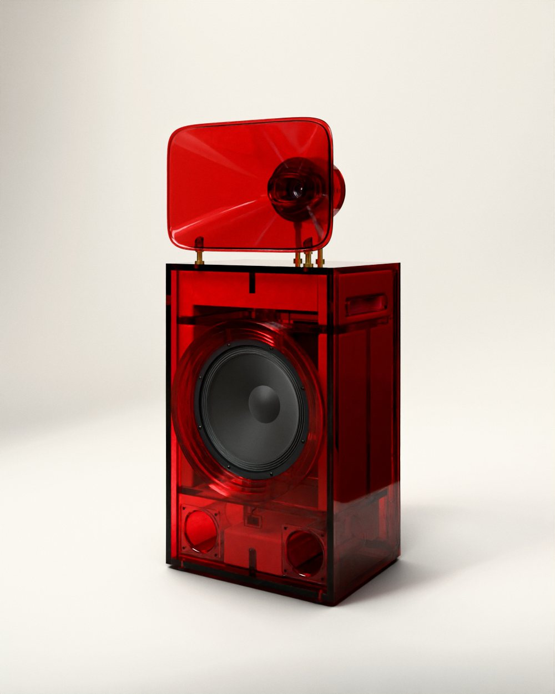<figcaption>01 Ember</figcaption></figure><figure class="t7">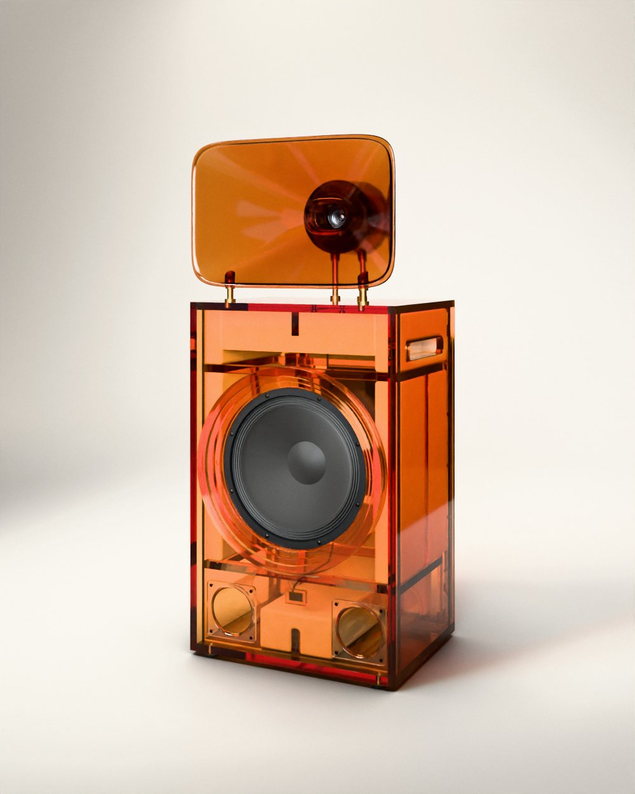<figcaption>02 Dust</figcaption></figure><figure class="t7">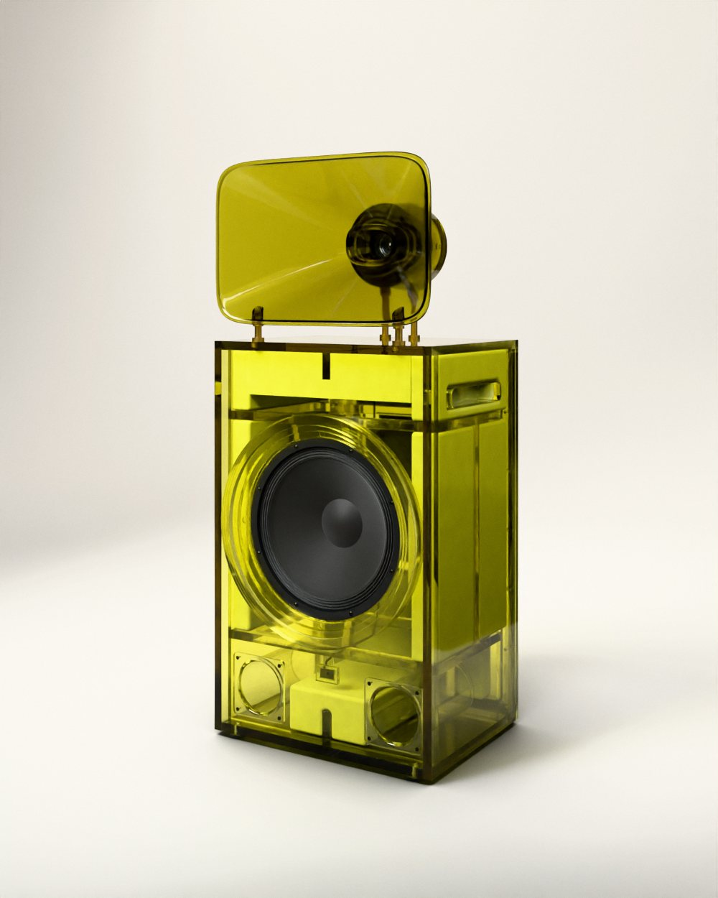<figcaption>03 Acid</figcaption></figure><figure class="t7">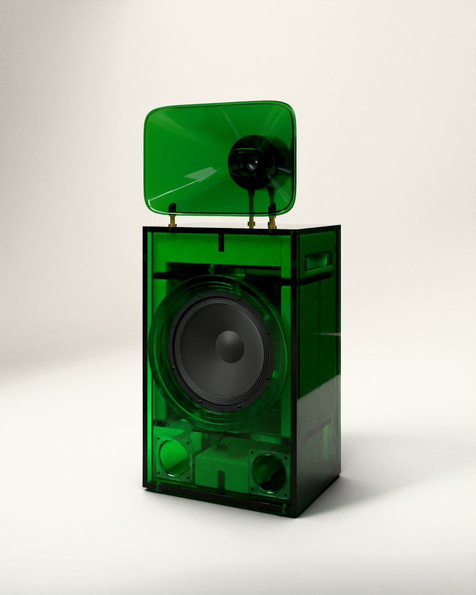<figcaption>04 Poison</figcaption></figure><figure class="t7">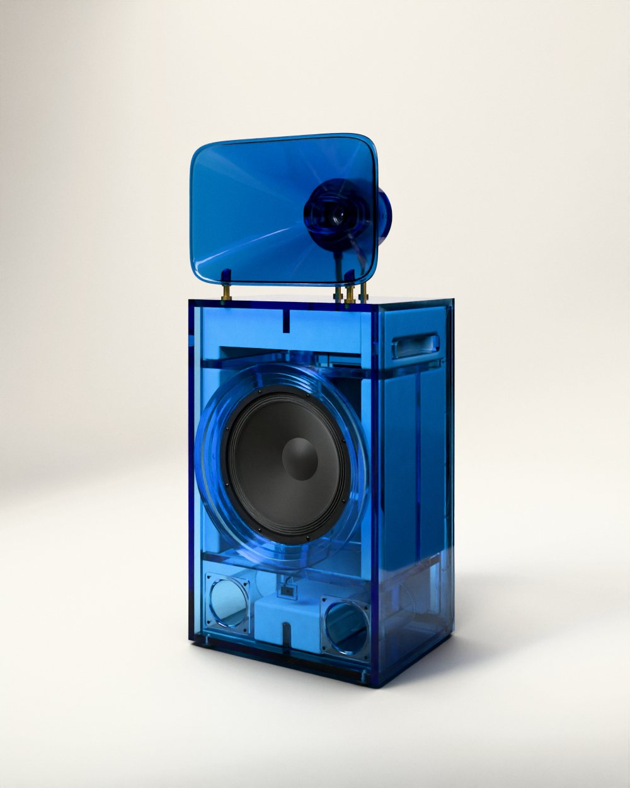<figcaption>05 Ice</figcaption></figure><figure class="t7">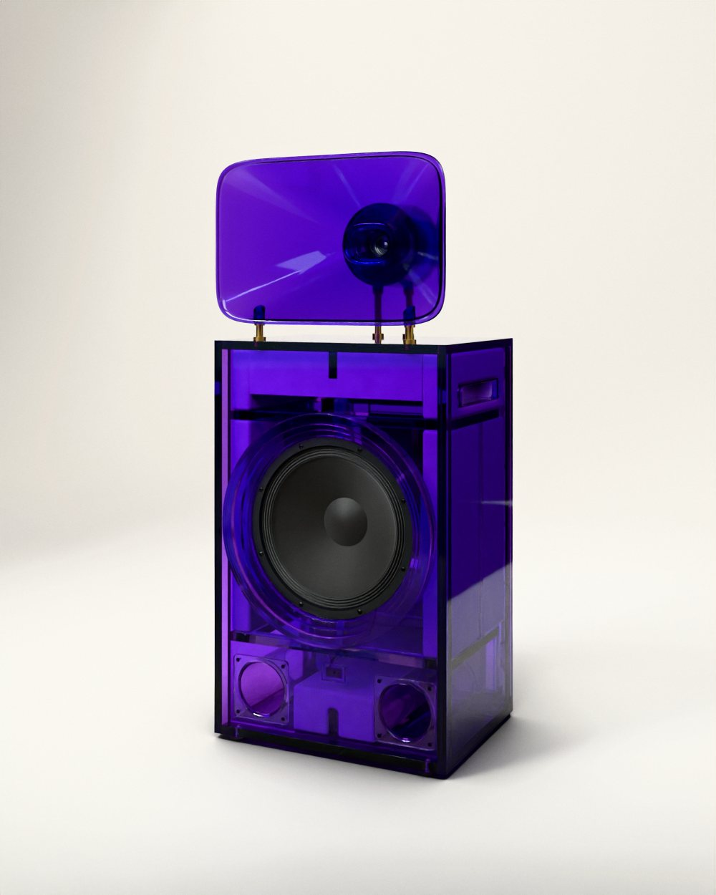<figcaption>06 Haze</figcaption></figure><figure class="t7">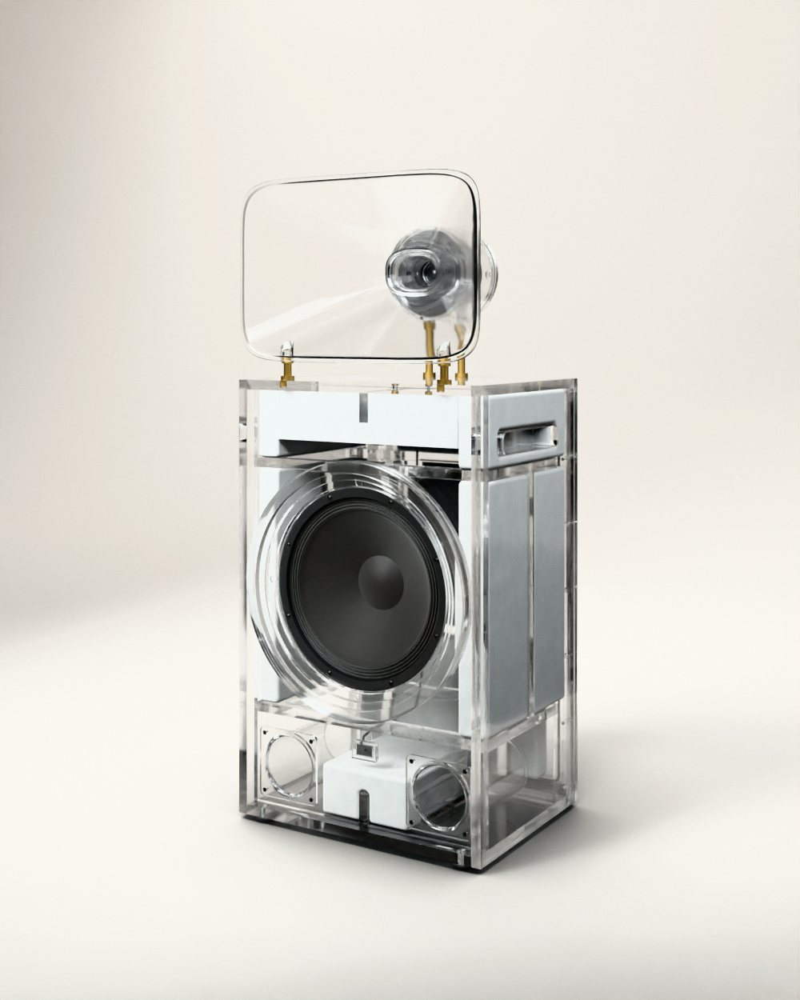<figcaption>07 Fog</figcaption></figure></div><figcaption>Tropos in the seven, each on its own feet, cover off. <span class="render">Render</span></figcaption></figure></div>
    <h1><span class="tag"><span class="tg">A world of sound,</span> <span class="tg">in color.</span></span><span>The EARF brand book.</span></h1>
    <div class="meta">
      <p class="lede">Hi-fi and light, cast in tinted acrylic. This book is how EARF looks, sounds and arrives, so that everything made under the name feels like it came out of one room.</p>
      <div class="new"><p>New in this edition</p><ul><li>Seven colors, Ember to Fog; Smoke is held.</li><li>Tropos on its own feet, no light in the base, the polished horn.</li><li>Every picture a render; the execution plans parked.</li></ul></div>
    </div>
    <div class="spectrum" aria-label="The seven tints, Ember to Fog">
      <div class="slab" style="--t:#920000"><span>01<i> Ember</i></span></div>
      <div class="slab ink" style="--t:#E06718"><span>02<i> Dust</i></span></div>
      <div class="slab ink" style="--t:#E2AA15"><span>03<i> Acid</i></span></div>
      <div class="slab" style="--t:#1C5B02"><span>04<i> Poison</i></span></div>
      <div class="slab" style="--t:#2584BE"><span>05<i> Ice</i></span></div>
      <div class="slab" style="--t:#44147B"><span>06<i> Haze</i></span></div>
      <div class="slab light" style="--t:#D5DFE0"><span>07<i> Fog</i></span></div>
    </div>
  </div>
</section>
<section class="chap band" id="contents">
  <div class="in">
    <p class="eyebrow">Contents</p>
    <ol class="toc"><li><a href="#position"><span>01</span>Position</a></li><li><a href="#names"><span>02</span>The naming system</a></li><li><a href="#identity"><span>03</span>Identity</a></li><li><a href="#color"><span>04</span>Color</a></li><li><a href="#type"><span>05</span>Type</a></li><li><a href="#images"><span>06</span>Image direction</a></li><li><a href="#voice"><span>07</span>Voice</a></li><li><a href="#applications"><span>08</span>Applications</a></li><li><a href="#packaging"><span>09</span>Packaging</a></li><li><a href="#ideas"><span>10</span>Big ideas</a></li><li><a href="#press"><span>11</span>Press kit</a></li><li><a href="#facts"><span>12</span>The facts of record</a></li><li><a href="#parked"><span>··</span>Parked plans</a></li></ol>
  </div>
</section>


<section class="chap band" id="position">
  <div class="in">
    <div class="head"><p class="no">01 · Position</p><h2>One material, cast in color, made to be heard and lit.</h2></div>
    <div class="cols">
      <div><h3>What EARF is</h3><p>Hi-fi and lighting in tinted cast acrylic, designed in San Francisco. Tropos, a powered horn loudspeaker, leads. Hemisphere and Core light the room in the same acrylic, and Mantle, a turntable, plays the records. Every piece comes in the same seven tints, so a room can be one color or three.</p></div>
      <div><h3>For whom</h3><p>People who arrange a room around listening and want the system to be the best-looking thing in it. Bars, hotels and restaurants that treat sound as part of the design, and need the room to look as good as it sounds. Collectors of design who would buy a speaker as an object first and discover it is a serious one.</p></div>
      <div><h3>Why now</h3><p>Listening bars have spread from Tokyo to most large cities, and the habit has followed people home. Records came back to the living room. Interiors came back to color. And most high-end audio still arrives as a black box or a wood veneer. EARF answers them at once: color you can see through, a horn you can see into, light through the same material.</p></div>
    </div>
    <div class="habitats">
      <figure>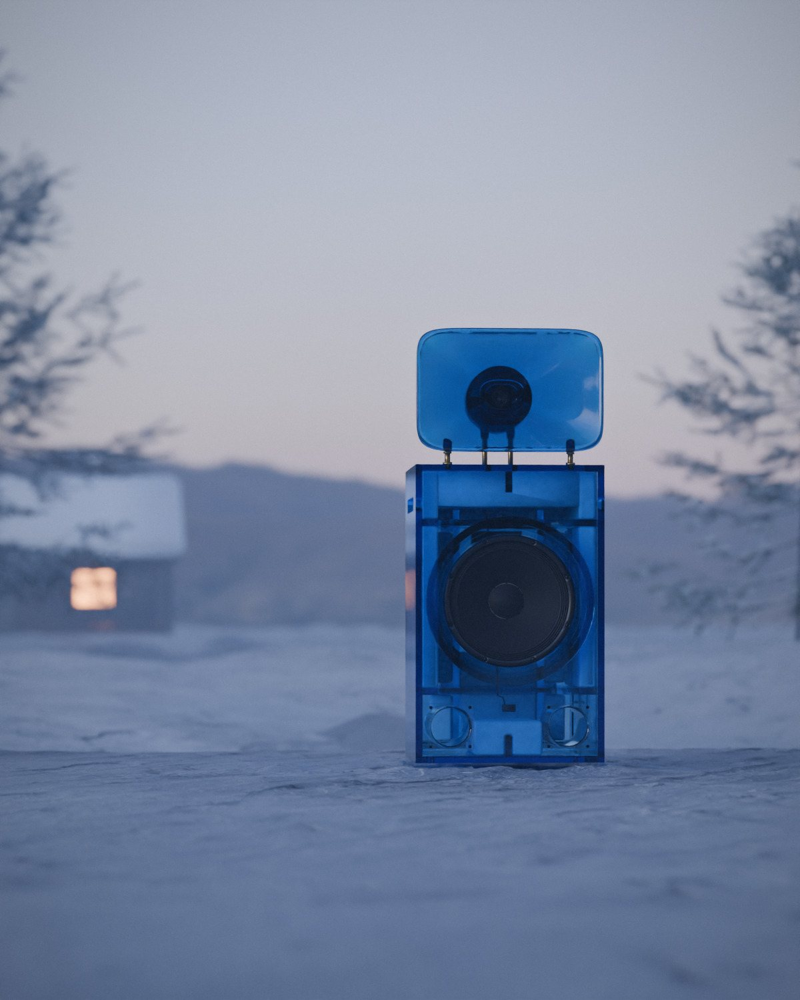<figcaption><b>In snow.</b> Tropos in Ice, where its color began. <span class="render">Render</span></figcaption></figure>
    </div>
    <div class="prose">
      <p class="eyebrow">What the brand holds to</p>
      <p><b>The material is the message.</b> Twenty millimeters of tinted acrylic carries light to its edges and shows what is inside. Nothing is painted on and nothing is hidden behind a veneer: the lining, the horn's driver, the amplifier's plate all show through the wall, so they are made to be seen.</p>
      <p><b>Color is a system, not a range.</b> The seven tints are the same seven in every product and every application, always in the same order, always numbered. A customer chooses a color once and the whole catalog follows.</p>
      <p><b>Engineering first, then the joke.</b> The horn's profile and the cabinet's bass were simulated before any acrylic was cut, and the particulars are published to the millimeter. The wit lives in the names and the lines, never in the figures.</p>
    </div>
  </div>
</section>

<section class="chap band paper" id="names">
  <div class="in">
    <div class="head"><p class="no">02 · The naming system</p><h2>Every product is a layer of the Earth.</h2>
      <p class="lede">The company is the planet. Each product takes the name of one of its layers, chosen for what the product does in a room. The tints take short, plain names of their own, each with one line that says what the color is like.</p></div>
    <div class="strata">
      <div class="stratum"><h3>Tropos</h3><p class="what">Powered horn loudspeaker · the flagship</p><p class="why">From the troposphere, the layer of air we live in, named for the Greek <i>tropos</i>, a turn. The speaker fills the air of a room. Chosen on 29&nbsp;October 2026 after Atmosphere was found taken in audio; a lawyer's search confirms before filing.</p></div>
      <div class="stratum"><h3>Hemisphere</h3><p class="what">Pendant lamp</p><p class="why">Half a globe, hung mouth down. A quarter turn takes its shade off and another puts a new color on.</p></div>
      <div class="stratum"><h3>Core</h3><p class="what">Cordless table lamp</p><p class="why">The glowing center. A tinted ball over a white opal inner ball, sitting low in a black base, with no cord.</p></div>
      <div class="stratum"><h3>Mantle</h3><p class="what">Turntable</p><p class="why">The layer that moves under the crust. A turntable in cast acrylic; the plinth floats 40&nbsp;mm over its base.</p></div>
      <div class="stratum"><h3>Planet EARF</h3><p class="what">A listening bar · a proposal</p><p class="why">The whole world in one room: every object in it would be for sale, and every one of them swaps tint.</p></div>
      <div class="stratum"><h3>Mother EARF</h3><p class="what">The globe · a brand object</p><p class="why">Proposed: the mark made real, six slotted discs of cast acrylic, 1.25&nbsp;m across, standing on a low plinth in the bar (about 200&nbsp;kg, too heavy to hang). Whether she is built is still open.</p></div>
      <div class="stratum reserve"><h3>Crust&nbsp;· Strata&nbsp;· Ozone</h3><p class="what">Held for later · proposals</p><p class="why">Names kept in reserve for a stand, a rack and an air-moving product, if they come. Each needs a yes and a trademark search first.</p></div>
    </div>
    <ul class="rules">
      <li><b>The company</b><span>Always EARF, in capitals, as one word. The site is earf.world. The bar, if it opens, is Planet EARF, and its globe Mother EARF (both proposals).</span></li>
      <li><b>A product</b><span>One word, a layer or a region of the Earth, a capital letter and nothing more. No model numbers in speech.</span></li>
      <li><b>A tint</b><span>Number and name, in spectrum order: 01 Ember, 02 Dust, 03 Acid, 04 Poison, 05 Ice, 06 Haze, 07 Fog. 08 Smoke is held. A product in a tint is "Tropos 04," or "Tropos in Poison."</span></li>
      <li><b>A model code</b><span>Proposed: TR-1, on the plate and the paperwork only. Codes for the lamps and Mantle follow the same pattern when they are certified.</span></li>
    </ul>
  </div>
</section>

<section class="chap band" id="identity">
  <div class="in">
    <div class="head"><p class="no">03 · Identity</p><h2>The acrylic globe, and the name beside it.</h2>
      <p class="lede">Three meridian discs and three parallel rings, slotted together as the proposed Mother EARF would be, each in a tint that mixes where it crosses. The wordmark is cut from the same circles and squares, its R a circle on a stem.</p></div>
    <div class="two">
      <div class="plate p">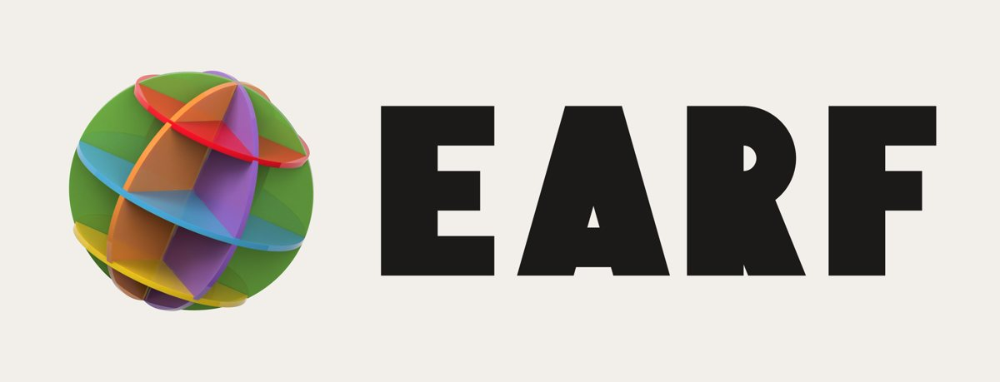</div>
      <div class="plate n">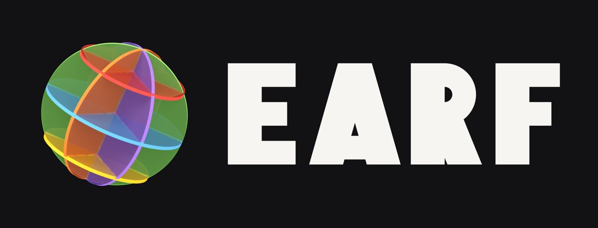</div>
    </div>
    <div class="four">
      <figure><div class="plate p">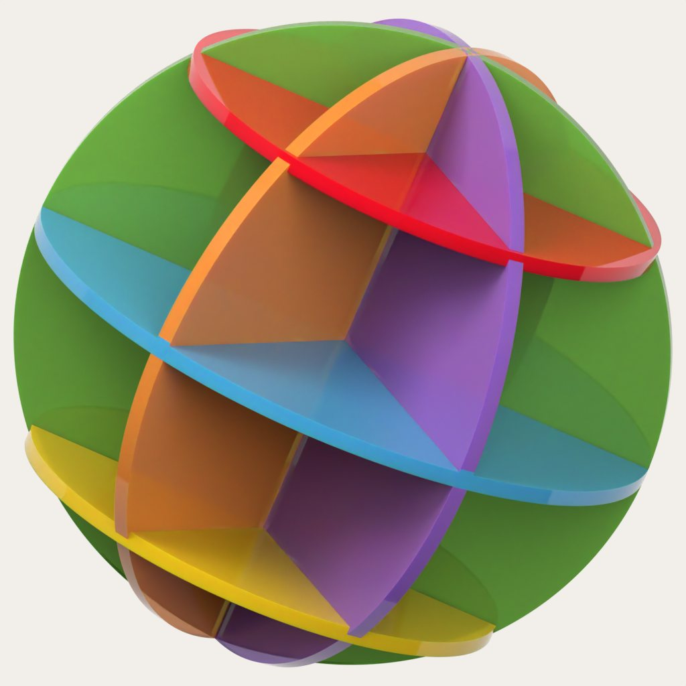</div><figcaption><b>The globe, rendered.</b> The mark itself: on the site's header, turning, and on anything printed in color.</figcaption></figure>
      <figure><div class="plate p">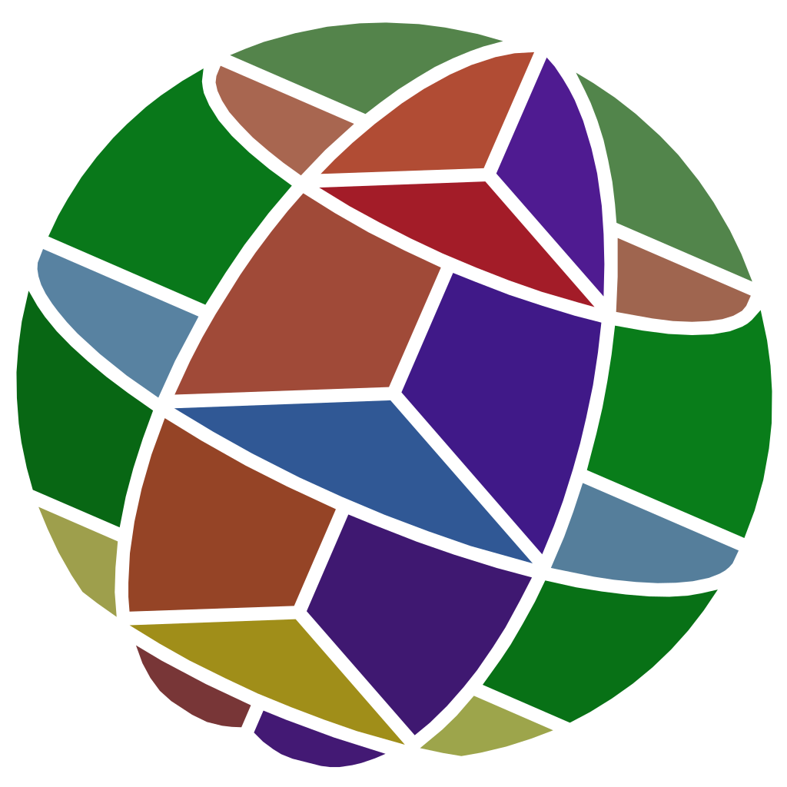</div><figcaption><b>Drawn flat.</b> For print where a render will not hold: screen printing, embroidery, small sizes in color.</figcaption></figure>
      <figure><div class="plate p">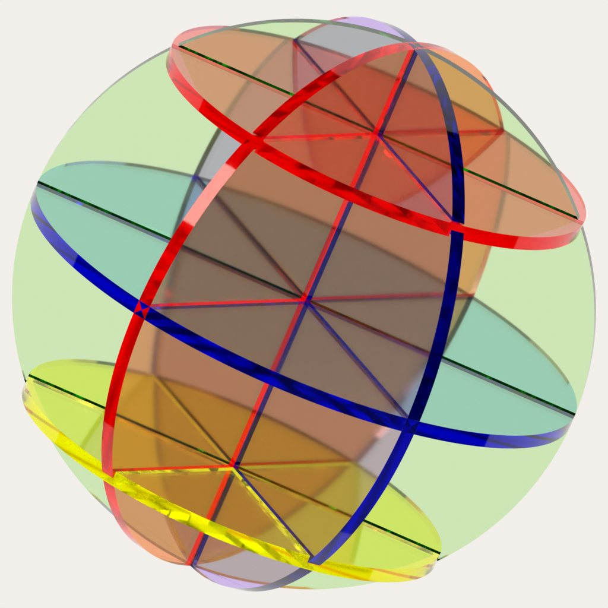<!-- the object --></div><figcaption><b>As an object.</b> The six discs cut and slotted: proposed for Mother EARF at 1.25&nbsp;m and the coin's face at 40&nbsp;mm. <span class="render">Render</span></figcaption></figure>
      <figure><div class="plate k">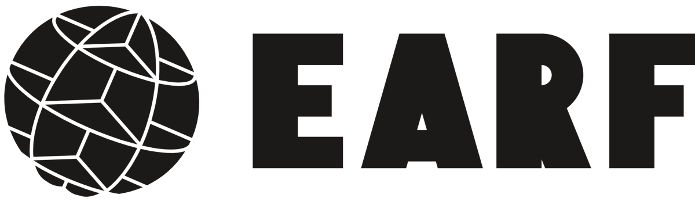</div><figcaption><b>One color.</b> Black, white, or any one tint. For etching, engraving, the rating plate and the door.</figcaption></figure>
    </div>
    <ul class="rules">
      <li><b>The lockup</b><span>The globe left, 1.5 cap heights across, the wordmark right. The pair never separates except where the globe stands alone (an icon, a coin, the door) or the wordmark does (a plate, a label, a social post's corner).</span></li>
      <li><b>Clear space</b><span>The height of the E's middle arm on every side, at least. Nothing else enters it, not even another EARF.</span></li>
      <li><b>Small sizes</b><span>Below 64&nbsp;px the globe is drawn again, not scaled: separate files at 64, 32 and 16&nbsp;px keep its lines open.</span></li>
      <li><b>On a picture</b><span>The wordmark alone, black or white, small, in a corner, never over the product. The color globe goes on paper or night, never on a photograph.</span></li>
      <li><b>Never</b><span>Recolor the globe's discs, outline the wordmark, set it in another face, stretch it, add a shadow or a glow it doesn't have, or put the tints in a gradient.</span></li>
      <li><b>Files</b><span>Files on request.</span></li>
    </ul>
    <div class="three motion">
      <figure><video src="img/globe-turn.mp4" autoplay muted loop playsinline aria-label="The acrylic globe turning, as in the site's header"></video><figcaption><b>The turn.</b> The globe turning on its axis, as it does in the site's header; the only motion the mark makes at rest.</figcaption></figure>
      <figure><video class="wide" src="img/ident-coin.mp4" autoplay muted loop playsinline aria-label="The coin ident: a coin spins and lands showing the globe"></video><figcaption><b>The coin.</b> An ident: a coin spins, wobbles and lands face up on the globe. Kept for a launch film and for EARFcoin.</figcaption></figure>
      <figure><video class="wide" src="img/ident-rise.mp4" autoplay muted loop playsinline aria-label="The rise ident: the globe rises over a dark horizon"></video><figcaption><b>Earthrise.</b> An ident on night: the globe rises over its own horizon. Parked, for the bar's screens and the end of a film.</figcaption></figure>
    </div>
    <div class="two">
      <div class="clear"><span class="cs">Clear space</span><div class="box">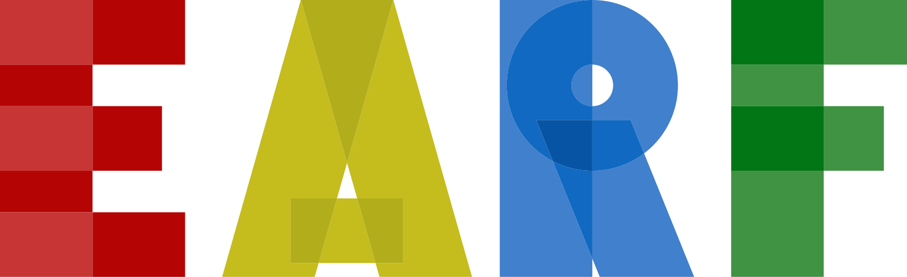</div></div>
      <div class="prose" style="align-content:center"><p class="eyebrow">The wordmark in the tints</p><p>For the rare moment when the name itself should carry the color: the opening of a launch film, the spine of a box set, a wall at the bar. Each letter takes one tint, as cut sheets laid over each other would. Used once per surface, never beside the color globe.</p></div>
    </div>
  </div>
</section>

<section class="chap band paper" id="color">
  <div class="in">
    <div class="head"><p class="no">04 · Color</p><h2>Seven colors, Ember to Fog.</h2>
      <p class="lede">The color is in the acrylic, not on it. Each tint has a name, a number, a line and two values: the mark's flat color and the color the acrylic renders as in light. Smoke, the eighth, is held; its card stays, marked.</p></div>
    <div class="tints">
      <div class="tint" style="--t:#920000"><div class="pic">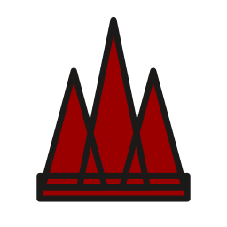</div><h3>Ember <small>01</small></h3><p class="line">The last light of the fire. <span class="render">Render</span></p>
        <dl><dt>Acrylic</dt><dd>Deep red · TruCast 2423</dd><dt>Mark</dt><dd><i style="background:#9B0000"></i><code>#9B0000</code></dd><dt>In light</dt><dd><i style="background:#920000"></i><code>#920000</code></dd></dl></div>
      <div class="tint" style="--t:#E06718"><div class="pic">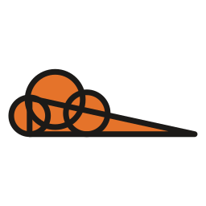</div><h3>Dust <small>02</small></h3><p class="line">A long, dry afternoon. <span class="render">Render</span></p>
        <dl><dt>Acrylic</dt><dd>Translucent orange · TruCast 2422</dd><dt>Mark</dt><dd><i style="background:#E5732A"></i><code>#E5732A</code></dd><dt>In light</dt><dd><i style="background:#E06718"></i><code>#E06718</code></dd></dl></div>
      <div class="tint" style="--t:#E2AA15"><div class="pic">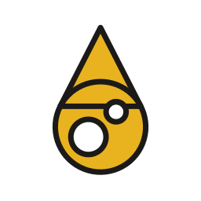</div><h3>Acid <small>03</small></h3><p class="line">A yellow with an edge. <span class="render">Render</span></p>
        <dl><dt>Acrylic</dt><dd>Fluorescent yellow · TruCast 9097</dd><dt>Mark</dt><dd><i style="background:#E9B320"></i><code>#E9B320</code></dd><dt>In light</dt><dd><i style="background:#E2AA15"></i><code>#E2AA15</code></dd></dl></div>
      <div class="tint" style="--t:#1C5B02"><div class="pic">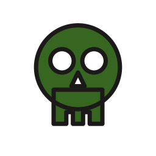</div><h3>Poison <small>04</small></h3><p class="line">Bottle green. Keep out of reach. <span class="render">Render</span></p>
        <dl><dt>Acrylic</dt><dd>Bottle green · a custom batch in 2092's hue</dd><dt>Mark</dt><dd><i style="background:#376621"></i><code>#376621</code></dd><dt>In light</dt><dd><i style="background:#1C5B02"></i><code>#1C5B02</code></dd></dl></div>
      <div class="tint" style="--t:#2584BE"><div class="pic"></div><h3>Ice <small>05</small></h3><p class="line">Glacier blue, and in no hurry. <span class="render">Render</span></p>
        <dl><dt>Acrylic</dt><dd>Tinted blue · TruCast 2069</dd><dt>Mark</dt><dd><i style="background:#4A90C8"></i><code>#4A90C8</code></dd><dt>In light</dt><dd><i style="background:#2584BE"></i><code>#2584BE</code></dd></dl></div>
      <div class="tint" style="--t:#44147B"><div class="pic">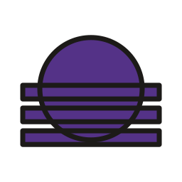</div><h3>Haze <small>06</small></h3><p class="line">Dusk, kept indoors. <span class="render">Render</span></p>
        <dl><dt>Acrylic</dt><dd>Violet · a custom batch in 2287's hue</dd><dt>Mark</dt><dd><i style="background:#543287"></i><code>#543287</code></dd><dt>In light</dt><dd><i style="background:#44147B"></i><code>#44147B</code></dd></dl></div>
      <div class="tint" style="--t:#D5DFE0"><div class="pic"></div><h3>Fog <small>07</small></h3><p class="line">Water-clear. Almost not there. <span class="render">Render</span></p>
        <dl><dt>Acrylic</dt><dd>Water-clear · TruCast 0000</dd><dt>Mark</dt><dd><i style="background:#F6F8F8"></i><code>#F6F8F8</code></dd><dt>In light</dt><dd><i style="background:#D5DFE0"></i><code>#D5DFE0</code></dd></dl></div>
      <div class="tint" style="--t:#3A3741"><div class="pic"><div class="gap held" role="img" aria-label="Held: Smoke" style="--ar:4/5"><span class="g1">Held</span><b>Smoke is held</b><span class="g2">Seven colors until it is decided. Its values stay here for when it is.</span></div>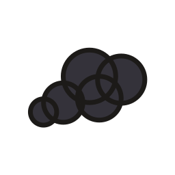</div><h3>Smoke <small>08 · held</small></h3><p class="line">Smoked glass, for after dark.</p>
        <dl><dt>Acrylic</dt><dd>Smoked dark gray · TruCast 2074</dd><dt>Mark</dt><dd><i style="background:#34323A"></i><code>#34323A</code></dd><dt>In light</dt><dd><i style="background:#3A3741"></i><code>#3A3741</code></dd></dl></div>
    </div>
    <div class="prose"><p class="muted" style="font-size:15px">The cabinets are 20&nbsp;mm cast sheet over a white lining: five in their stock TruCast colors, and Poison and Haze in lighter custom batches of their codes' hues (32.3% and 25.8% of light through 20&nbsp;mm). Each horn takes its cabinet's hue, deep enough that its 10&nbsp;mm wall reads like the 20&nbsp;mm one. "In light" is each tint's display color; "Mark" is the flat color for marks and icons. Both follow the chips once they are measured. Renders can't show Acid's fluorescence, and the deep horns are unproven on real sheet; both wait for the chips.</p></div>
    <div class="head" style="margin-top:12px"><p class="eyebrow">The neutrals</p><p class="lede">Paper and ink carry everything else, so the tints are always the loudest thing on the page. Night is for the bar and for the glow.</p></div>
    <div class="neutrals">
      <div class="neutral"><div class="sw" style="--c:#F4F1EC"></div><b>Page</b><span>#F4F1EC</span></div>
      <div class="neutral"><div class="sw" style="--c:#ECE8E1"></div><b>Paper</b><span>#ECE8E1</span></div>
      <div class="neutral"><div class="sw" style="--c:#D6D0C6"></div><b>Rule</b><span>#D6D0C6</span></div>
      <div class="neutral"><div class="sw" style="--c:#5E5A53"></div><b>Muted</b><span>#5E5A53</span></div>
      <div class="neutral"><div class="sw" style="--c:#1C1A18"></div><b>Ink</b><span>#1C1A18</span></div>
      <div class="neutral"><div class="sw" style="--c:#100F12"></div><b>Night</b><span>#100F12</span></div>
    </div>
    <ul class="rules">
      <li><b>Order</b><span>Always the spectrum: Ember, Dust, Acid, Poison, Ice, Haze, Fog. Never alphabetical, never by popularity.</span></li>
      <li><b>One at a time</b><span>A surface carries one tint, or all seven in order. Never two or three picked for a mood.</span></li>
      <li><b>Pairs</b><span>Where two are shown together, they pair by the painter's wheel: each tint with its complement and its two neighbors; Fog, with no hue, goes with the cool tints.</span></li>
      <li><b>No gradients</b><span>The tints never blend into one another on a printed or digital surface. Where they meet, they overlap, as sheets do.</span></li>
    </ul>
  </div>
</section>

<section class="chap band" id="type">
  <div class="in">
    <div class="head"><p class="no">05 · Type</p><h2>A grotesque with a little warmth, and a typewriter for the facts.</h2>
      <p class="lede">The site's two faces, both free and open: Instrument Sans for everything that speaks, IBM Plex Mono for everything that measures.</p></div>
    <div class="specimen">
      <div><div class="aa">Aa</div><p class="muted" style="margin-top:14px">Instrument Sans · 400 to 700 · headlines at 600, tight; text at 400</p></div>
      <div><div class="mo">20&nbsp;mm</div><p class="muted" style="margin-top:14px">IBM Plex Mono · 400 and 500 · labels, numbers, eyebrows, particulars; capitals with a little tracking</p></div>
    </div>
    <div class="scale">
      <div><span class="k">Display · 600 · −4.5%</span><span style="font-size:clamp(34px,6vw,72px);font-weight:600;letter-spacing:-.045em;line-height:1"><span class="tg">A world of sound,</span> <span class="tg">in color.</span></span></div>
      <div><span class="k">Headline · 600 · −3%</span><span style="font-size:clamp(28px,3.4vw,40px);font-weight:600;letter-spacing:-.03em;line-height:1.05">Bottle green. Keep out of reach.</span></div>
      <div><span class="k">Lede · 400</span><span style="font-size:21px;line-height:1.45">Twenty millimeters of tinted acrylic shows what is inside: the lining, the driver, the amplifier's plate.</span></div>
      <div><span class="k">Text · 400 · 17/1.6</span><span>Each cabinet is tinted cast acrylic, 20&nbsp;mm thick. The lining shows through the walls, so we dressed it in white voile.</span></div>
      <div><span class="k">Label · Mono 500 · +12%</span><span class="mono" style="font-size:12.5px;font-weight:500;letter-spacing:.12em;text-transform:uppercase">Tropos 04 · Poison · 1295&nbsp;mm</span></div>
    </div>
    <ul class="rules">
      <li><b>Sentence case</b><span>Headlines in sentence case with a period. Capitals only in the mono labels and on hardware.</span></li>
      <li><b>Spelling</b><span>American, as the site has it: color, gray, aluminum, meter. Units in millimeters with a space, 20&nbsp;mm; figures that are designed, not measured, say "about."</span></li>
      <li><b>On hardware</b><span>Plex Mono for every engraved or laser-marked word; the wordmark for the name. Nothing else.</span></li>
      <li><b>Fallbacks</b><span>Helvetica Neue, then Arial; Courier New for the mono. Never Inter, never a serif.</span></li>
    </ul>
  </div>
</section>

<section class="chap band paper" id="images">
  <div class="in">
    <div class="head"><p class="no">06 · Image direction</p><h2>Light through the material is the subject.</h2>
      <p class="lede">Seven kinds of picture, each with one job; three are shown here: the studio, in its element, and up close. Until the first pieces are built, every one is a render and says so; the same rules carry over to the photographs.</p></div><figcaption><b>Through the wall.</b> The seven from behind: nothing painted on and nothing hidden, the amplifier's plate seen through the acrylic. <span class="render">Render</span></figcaption></figure></div>
    <div class="three">
      <figure class="tall"><figcaption><b>The studio.</b> One product, a pale seamless, a soft key: the product page and the press. No props. <span class="render">Render</span></figcaption></figure>
      <figure class="tall"><figcaption><b>In its element.</b> Each tint where it began: real places, real texture, the speaker set into the ground, never floating over it. <span class="render">Render</span></figcaption></figure>
      <figure class="tall">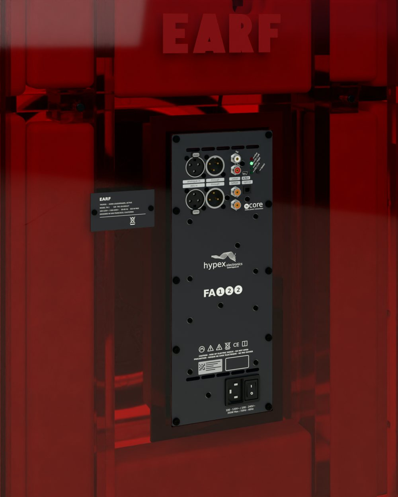<figcaption><b>Up close.</b> The amplifier's plate through the Ember back. Close-ups only beside the whole speaker, its cover off; the small rating plate's wording here predates the proposal under Applications. <span class="render">Render</span></figcaption></figure>
      
      
      
    </div>
    <ul class="rules">
      <li><b>Always</b><span>Light passing through the acrylic. A colored shadow somewhere in the frame. The product's real proportions, from the drawings. A label, "Render," until it is a photograph.</span></li>
      <li><b>Never</b><span>Tilt-shift or dioramas. A setting that cannot look real. A product floating over its ground. Props that compete with it. Flare, haze or glow added after the fact.</span></li>
      <li><b>Crops</b><span>3:2 on the site, 4:5 on phones and posts, 1:1 for the icons. The product never touches the frame's edge, except up close.</span></li>
      
    </ul>
  </div>
</section>

<section class="chap band night" id="voice">
  <div class="in">
    <div class="head"><p class="no" style="color:var(--night-muted)">07 · Voice</p><h2>Cheeky, but reserved.</h2>
      <p class="lede" style="color:var(--night-muted)">Say what the thing is and what it does. One line per surface may smile; the rest is exact.</p></div>
    <div class="lines">
      <div><q><span class="tg">A world of sound,</span> <span class="tg">in color.</span></q><span>The tagline</span></div>
      <div><q>Seven colors, Ember to Fog.</q><span>Tropos, the seven</span></div>
      <div><q>Goes where the conversation is.</q><span>Core</span></div>
      <div><q>A turntable in cast acrylic.</q><span>Mantle</span></div>
      <div><q>Bottle green. Keep out of reach.</q><span>04 Poison</span></div>
      <div><q>Drawn to be made.</q><span>Progress</span></div>
    </div>
    <div class="cols">
      <div><h3>The tagline, set</h3><p style="color:var(--night-muted)">"A world of sound, in color." Exactly so: sentence case, a comma after "sound," a period at the end. One line where it fits. Where it needs two, break after the comma and nowhere else: "A world of sound, / in color." On the web, keep each half on one line, so it can only break at the comma.</p></div>
      <div><h3>The record</h3><p style="color:var(--night-muted)">"Something in the air." was the headline from the first pictures. It is retired, and so is "Eight things in the air," which kept the phrase alive: don't set either on anything new. The tagline is now "A world of sound, in color." Tropos's line is "Seven colors, Ember to Fog."</p></div>
    </div>
    <div class="cols">
      <div><h3>Exact</h3><p style="color:var(--night-muted)">Millimeters, kilograms, hertz. "About" when a figure is designed and not yet measured. Never a superlative a measurement hasn't earned.</p></div>
      <div><h3>Dry</h3><p style="color:var(--night-muted)">The wit is in the names, the tints' lines and one turn of phrase per surface. No exclamation marks, no puns on "sound," no winking at the reader.</p></div>
      <div><h3>Plain about the unfinished</h3><p style="color:var(--night-muted)">"In development, not yet for sale." "Every picture here is a render." A brand at this stage earns trust by saying what isn't done.</p></div>
    </div>
    <div class="dodont">
      <div class="hdrow"><span class="hd">Not this</span><span class="hd">This</span><span class="hd">Because</span></div>
      <div><s>Eight horned speakers in colored acrylic.</s><span>Seven colors, Ember to Fog.</span><span class="why">Never state what the picture already shows.</span></div>
      <div><s>Watch the horns turn as you scroll.</s><span>(Say nothing. Let it turn.)</span><span class="why">The words are about the product, never the website.</span></div>
      <div><s>Choose your weather.</s><span>Each color, where it began.</span><span class="why">Smoke and Poison aren't weather. Don't force a metaphor past where it fits.</span></div>
      <div><s>Sustainably crafted from eco-conscious materials.</s><span>(Nothing, until it can be shown.)</span><span class="why">A claim we can't yet deliver reads cheap.</span></div>
      <div><s>Unbeatable value, for a limited time only!</s><span>Everything is made to order, so we quote rather than list.</span><span class="why">State the fact and the reason; never chase.</span></div>
    </div>
  </div>
</section>

<section class="chap band" id="applications">
  <div class="in">
    <div class="head"><p class="no">08 · Applications</p><h2>The same room, wherever the name goes.</h2>
      <p class="lede">Drawn mockups for review. Sizes and stocks are proposals; marks and prices stay placeholders until they are earned and set.</p></div>
    <div class="app"><figure>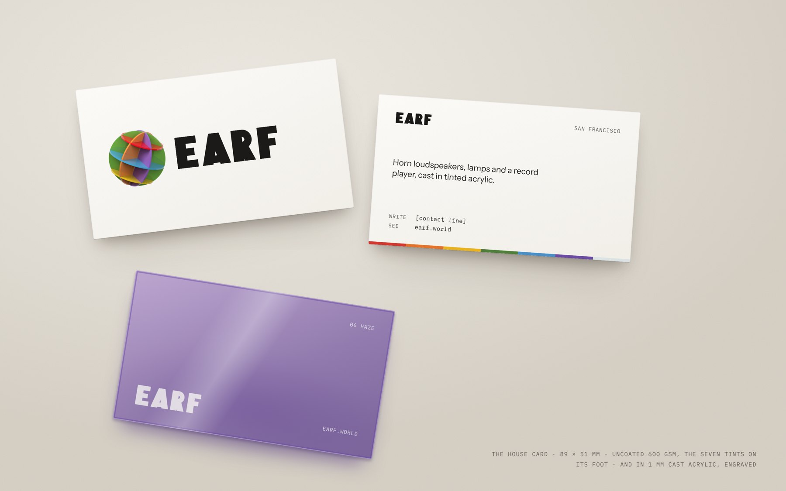</figure>
      <div class="txt"><h3>The house card</h3><p>One card for the company, not a person: the front the lockup, the back one line and the address. The tints run along its foot in order, printed on the edge of the stack, so a box of cards is a spectrum. A second card, cut from 1&nbsp;mm cast acrylic in any tint and engraved, is for the bar and for the people who ask.</p>
        <dl><dt>Size</dt><dd>89 × 51&nbsp;mm</dd><dt>Stock</dt><dd>Uncoated 600&nbsp;gsm, letterpress black; edge painted in seven bands</dd><dt>Acrylic</dt><dd>1&nbsp;mm cast, laser-cut and engraved, corners 1&nbsp;mm</dd></dl></div></div>
    <div class="app"><figure>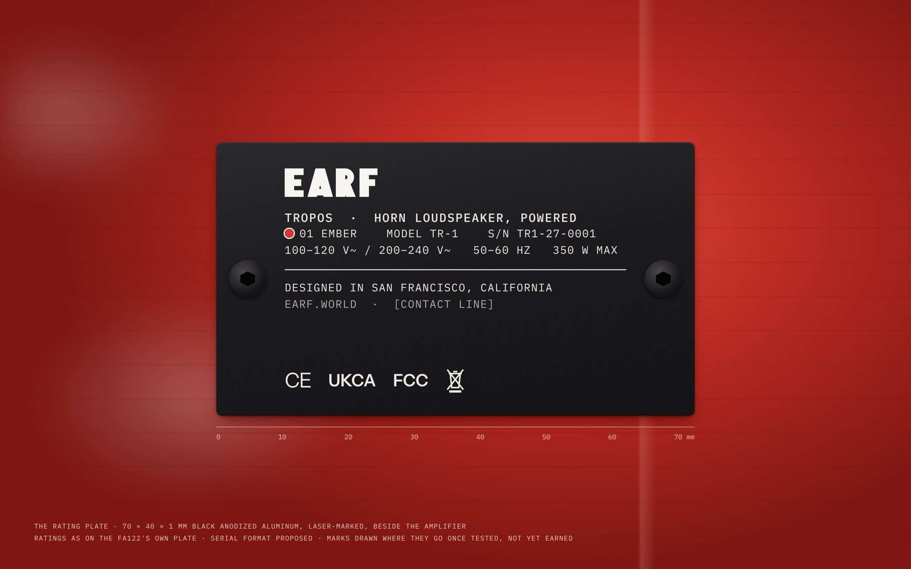</figure>
      <div class="txt"><h3>The rating plate</h3><p><b>Proposed.</b> The marks shown are where they would go once earned: none is held yet. The one place the brand is required by law, so it is the most carefully set. Black anodized aluminum, laser-marked white, two black pan heads, beside the amplifier on the back of every Tropos, whatever its color.</p>
        <dl><dt>Size</dt><dd>70 × 40 × 1&nbsp;mm</dd><dt>Type</dt><dd>The wordmark, then Plex Mono</dd><dt>Ratings</dt><dd>As on the FA122's own plate</dd><dt>Marks</dt><dd>Drawn where they go; added only once tested</dd></dl></div></div>
    <div class="app"><figure>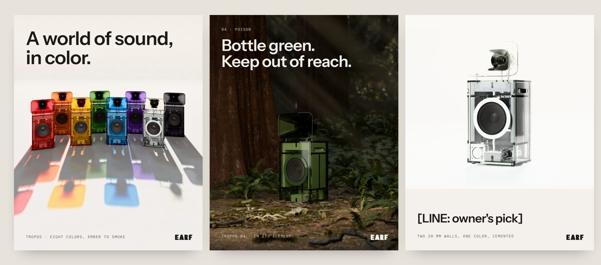</figure>
      <div class="txt"><h3>Social posts</h3><p>One picture, one line, the wordmark small in a corner. The line is always the site's, never a caption written for the feed. Three kinds rotate: the seven, a tint in its element, one tint whole in the studio.</p>
        <dl><dt>Format</dt><dd>4:5, 1080 × 1350</dd><dt>Line</dt><dd>Instrument Sans 600, top-left or over sky</dd><dt>Label</dt><dd>Plex Mono, the tint's number and name</dd><dt>Never</dt><dd>Stickers, emoji, countdowns</dd></dl></div></div>
    <div class="app"><figure>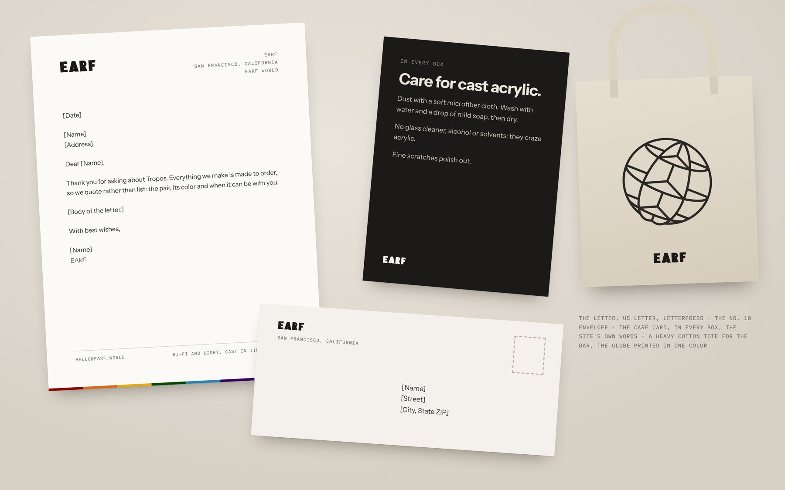</figure>
      <div class="txt"><h3>Paper, and the card in the box</h3><p>The letter says what the site says. The care card ships in every box in the site's own words, because the wrong cleaner crazes acrylic for good. The tote is the bar's: the globe in one color on heavy cotton.</p>
        <dl><dt>Letter</dt><dd>US Letter, letterpress, the tints along its foot</dd><dt>Envelope</dt><dd>No. 10, the wordmark and the city only</dd><dt>Care card</dt><dd>Black, white print, 4 × 5.5&nbsp;in</dd><dt>Tote</dt><dd>Heavy natural cotton, one-color screen print</dd></dl></div></div>
    <div class="app nopic">
      <div class="txt"><h3>Planet EARF's signs</h3><p>The bar names itself once, quietly, on a side door. Inside, the brand's busiest application is a tag: everything in the room is for sale, so every object wears one, cut from Fog acrylic and hung on a black thread, its tint marked with a dot.</p>
        <dl><dt>Door</dt><dd>Blackened steel, a 280&nbsp;mm etched disc, unlit</dd><dt>Tag</dt><dd>90 × 50&nbsp;mm Fog acrylic, engraved, filled black</dd><dt>Hours</dt><dd>6&nbsp;mm smoked gray stock, glazed to the window; as in the house book</dd><dt>Prices</dt><dd>On request; set at launch</dd></dl></div></div>
    <div class="app nopic">
      <div class="txt"><h3>EARFcoin</h3><p>The brand you can hold. One coin a guest, one song a coin: cast acrylic in the seven tints, 40&nbsp;mm across, the globe engraved on its back and read through the tint, GOOD FOR ONE SONG around the rim, reeded like money.</p>
        <dl><dt>Size</dt><dd>40 × 6&nbsp;mm, about 9&nbsp;g</dd><dt>Made</dt><dd>Laser-cut, edges polished and reeded, engraved and filled</dd><dt>Ritual</dt><dd>A bowl at the door, a clear column at the decks</dd></dl></div></div>
  </div>
</section>

<section class="chap band paper" id="packaging">
  <div class="in">
    <div class="head"><p class="no">09 · Packaging</p><h2>Arrives like an instrument. Opens like a gift.</h2>
      <p class="lede">A speaker of about 73&nbsp;kg in polished acrylic is a hard thing to ship and an easy thing to scratch. The crate is built so two people can open it and walk the speaker out without lifting it; the lamps come in boxes made of paper dyed the color of the shade inside.</p></div>
    <p class="prose" style="max-width:62ch"><b>A pair of Tropos, as it arrives.</b> Two upright crates and one horn case, printed in two inks: black and the tint.</p>
    
    <ol class="steps">
      <li><b>Unlatch</b>Four black over-center latches on the door. No screws, no tools, no crowbar.</li>
      <li><b>Lower</b>The door is hinged at its foot and comes down to the floor as a gentle ramp.</li>
      <li><b>Walk it out</b>The speaker rides out on its birch sled, on felt runners, down the door.</li>
      <li><b>Unsleeve</b>A cotton sleeve in the speaker's tint lifts off from the top. It stays as the dust cover.</li>
      <li><b>Crown it</b>The horn comes out of its own case, lid up, and seats on its posts with one nut.</li>
    </ol>
    <div class="decals">
      <figure>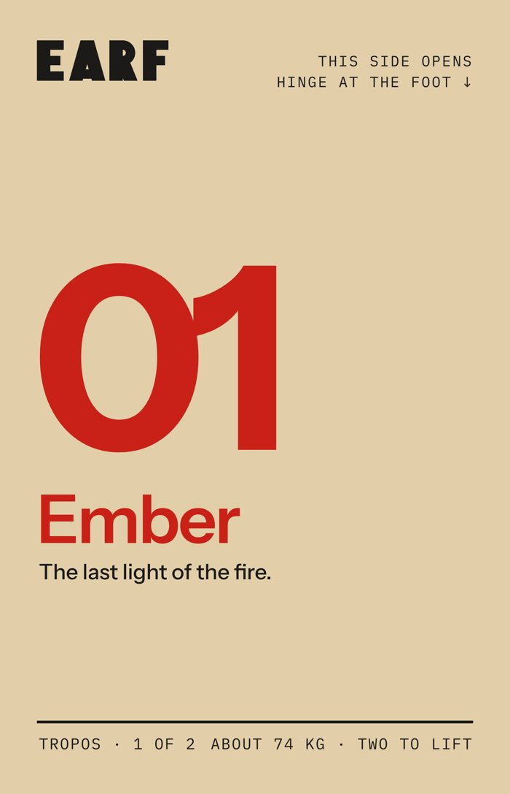<figcaption>The front. Two inks.</figcaption></figure>
      <figure>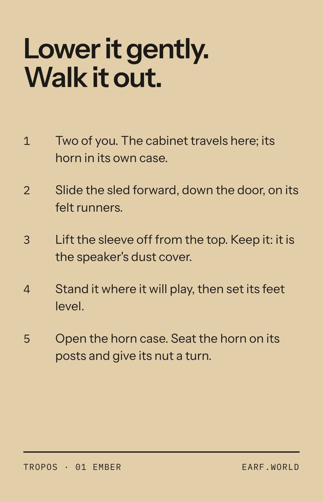<figcaption>Inside the door.</figcaption></figure>
      <figure>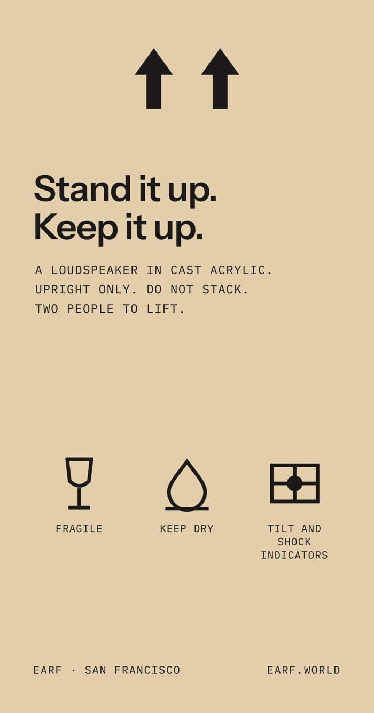<figcaption>The side: handling marks.</figcaption></figure>
    </div>
    <div class="scroll"><table>
      <thead><tr><th>Piece</th><th>Outside</th><th>Built from</th><th>Protects with</th><th>Tested to <span class="prop">target</span></th></tr></thead>
      <tbody>
        <tr><td><b>Tropos crate</b>, one a speaker</td><td>720 × 600 × 1160&nbsp;mm on two 100&nbsp;mm skids <span class="prop">proposal</span></td><td>18&nbsp;mm birch ply, cleated; black steel corners and latches; the door hinged at its foot</td><td>Charcoal felt lining; cross-linked polyethylene corner blocks; the sled; the cotton sleeve against scuffs; tilt and shock indicators on two faces</td><td>ISTA 3B (freight, less than a truckload), plus a drop and tilt check on the crate</td></tr>
        <tr><td><b>Horn case</b>, one a pair</td><td>1420 × 560 × 460&nbsp;mm <span class="prop">proposal</span></td><td>18&nbsp;mm birch ply, a lifting lid, two steel handles</td><td>Both horns face up in a cut foam bed, the throats unloaded; the pods' caps packed apart</td><td>ISTA 3B, with the crates</td></tr>
        <tr><td><b>Hemisphere drum</b>, one a shade</td><td>260&nbsp;mm across, 170&nbsp;mm tall <span class="prop">proposal</span></td><td>Through-dyed board in the shade's tint, the globe blind-debossed on the lid; the fitting in a tray below</td><td>A molded pulp ring holds the shade by its collar, clear of every wall</td><td>ISTA 3A (parcel)</td></tr>
        <tr><td><b>Core box</b></td><td>220&nbsp;mm cube <span class="prop">proposal</span></td><td>Through-dyed board in the ball's tint; a lift-off lid</td><td>Molded pulp: the ball on top, the base beneath, and its dock beside it</td><td>ISTA 3A (parcel)</td></tr>
        <tr><td><b>Mantle crate</b></td><td>To be drawn from Mantle's design figures, about 450 × 370 × 199&nbsp;mm</td><td>Birch ply, the lid printed with the tint</td><td>Platter and lid packed apart; the plinth on its own foam</td><td>ISTA 3A or 3B by weight</td></tr>
      </tbody>
    </table></div>
    <div class="prose"><p class="muted" style="font-size:15px">Why this raises the odds: one freight claim on a pair can erase the margin on several; a crate two people can open without tools is also a crate a dealer or a hotel can receive without a specialist. And the unboxing is the first piece of content most owners post.</p></div>
  </div>
</section>

<section class="chap band" id="ideas">
  <div class="in">
    <div class="head"><p class="no">10 · Big ideas</p><h2>Seven ways to raise the odds.</h2>
      <p class="lede">Ranked by what each does for funding or sales per dollar. Every cost is an estimate, not a quote; names, dates and prices in the mockups are placeholders.</p></div>
    <article class="feature"><figure>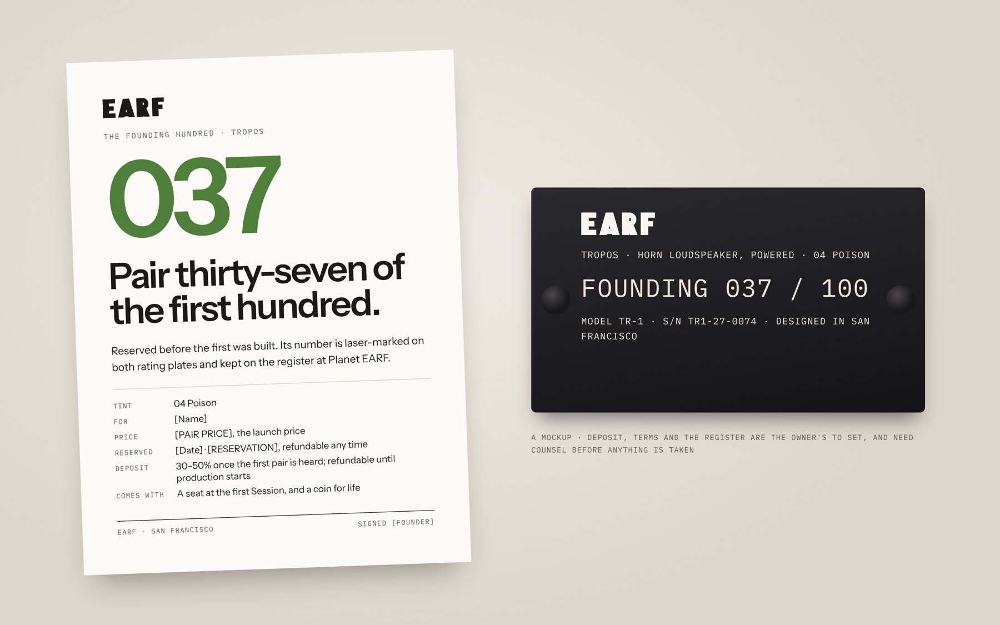</figure>
      <div class="ftxt"><p class="eyebrow">Idea 1 · the one most likely to raise money</p><h3>The Founding Hundred</h3><p class="lede" style="font-size:19px">The first hundred pairs of Tropos, reserved before the first is built, numbered on both plates and kept on the founders' register. The number is the reward, not a discount.</p><p class="muted" style="font-size:14px">A proposal; how first buyers sign up is still open.</p>
        <div class="fcols"><div><p class="eyebrow">What a buyer gets</p><ul class="gets"><li>One of the first hundred pairs, in any of the seven tints, made to order</li><li>FOUNDING 037 / 100 laser-marked on both rating plates</li><li>A numbered certificate and a place on the founders' register</li><li>A seat at a Session, and an EARFcoin for life</li></ul></div><dl><dt>Price</dt><dd>On request; set at launch</dd><dt>Stage 1</dt><dd>A refundable reservation, about $1,000 a pair (lamps $100 to $250); "planned product; refundable any time"</dd><dt>Stage 2</dt><dd>After a working prototype: a 30 to 50% deposit with a stated delivery window</dd><dt>Stage 3</dt><dd>The balance before shipping</dd><dt>When</dt><dd>Reservations once terms are written; deposits after a working prototype</dd></dl></div>
        <p class="legal"><b>Before anything is taken:</b> counsel drafts the terms. The FTC's mail-order rule applies to made-to-order goods (shipping dates with a reasonable basis, delay notices, refunds within seven working days); California asks for the refund policy, legal name and street address before payment (B&amp;P §17538) and voids "non-refundable deposits" in consumer sales (Civil Code §1671). Deposits sit in a separate account, spent only on that order; a company is formed first (its form is still open). Amounts are examples.</p></div></article>
    <div class="app nopic">
      <div class="txt"><p class="eyebrow">Idea 2</p><h3>The Tint Library</h3><p>The seven tints as 100 × 100 × 20&nbsp;mm cast tiles in a birch tray, sent to architects and designers who ask.</p>
        <dl><dt>Cost</dt><dd>About $100 to $250 a kit <span class="prop">est.</span></dd><dt>When</dt><dd>As soon as the sheet is chosen</dd><dt>Why</dt><dd>Designers specify what they can hold, and making the kits fixes the cast colors manufacturing needs.</dd></dl></div></div>
    <article class="feature">
      <div class="ftxt"><p class="eyebrow">Idea 3 · the proof</p><h3>EARF Sessions</h3><p class="lede" style="font-size:19px">One album, start to finish, recorded live through the room's own pair in front of six listeners, pressed in the night's tint and numbered. Proof the speakers are serious, in the one form that can't be faked.</p>
        <div class="fcols"><div><p class="eyebrow">What a buyer gets</p><ul class="gets"><li>A 12-inch LP, 180&nbsp;g, pressed in the evening's tint, numbered</li><li>The jacket with the room on the front, and a download code</li><li>First copies to the night's six listeners</li><li>Session 00 recorded through the first pair, before the bar exists</li></ul></div><dl><dt>Price</dt><dd>On request; the budget recommends $50 for a numbered edition of 300 (est.)</dd><dt>Cost</dt><dd>$10,917 for 300 (est.): recording, mixing, mastering, pressing, licenses, the artist's fee for the night and a 10% contingency</dd><dt>Return</dt><dd>At $50, break-even at 257 of the 275 for sale (25 go to the artist). A partner pays for the pressing (about $3,000): at $50, break-even falls to 186, and selling out leaves about $3,771 (est.)</dd><dt>When</dt><dd>Session 00 at the debut; files to the plant within four weeks; records about 14 weeks after</dd><dt>Press</dt><dd>The record goes to the hi-fi press once pressed</dd></dl></div>
        <p class="legal"><b>Before anything is taken:</b> the artist's agreement and share in writing, and mechanical licenses for any songs the artist didn't write.</p></div></article>
    <div class="app"><figure>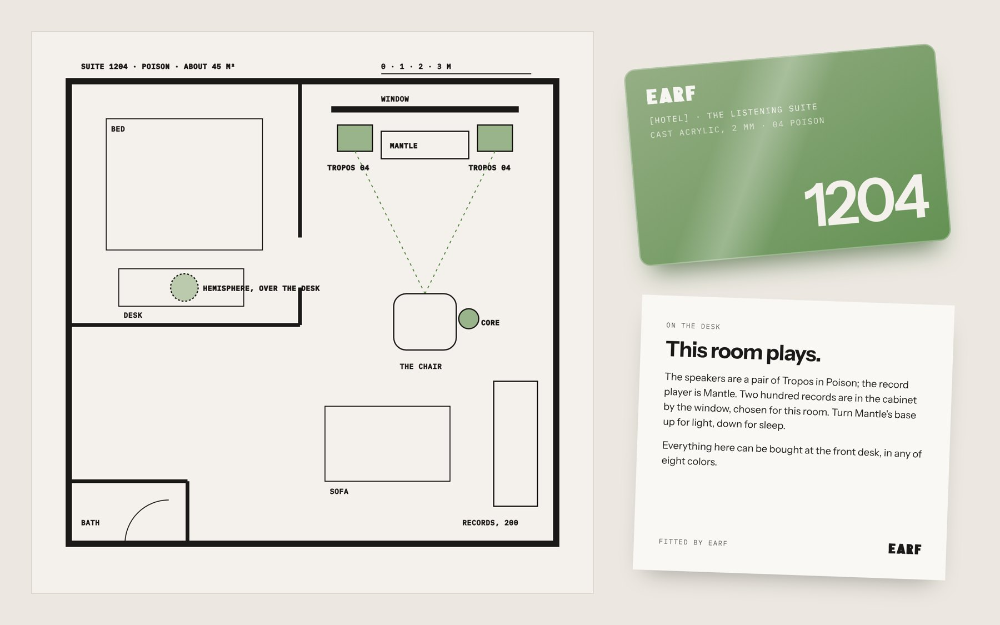</figure>
      <div class="txt"><p class="eyebrow">Idea 4</p><h3>Hotel listening suites</h3><p>A suite fitted as a complete EARF room in one tint, with records chosen for it; everything for sale at the front desk.</p>
        <dl><dt>Cost</dt><dd>Trade-priced kits; one pilot suite <span class="prop">est.</span></dd><dt>When</dt><dd>A season after a signed hotel</dd><dt>Why</dt><dd>A night with the speaker sells it better than a picture; trade revenue that doesn't wait for the bar.</dd></dl></div></div>
    <div class="app nopic">
      <div class="txt"><p class="eyebrow">Idea 5</p><h3>A debut room</h3><p>One dark room, the speakers along a curved wall, a Session each night, every piece tagged: first in San Francisco, at the debut; later at the hi-fi trade fairs and in Milan, once there is a batch.</p>
        <dl><dt>Cost</dt><dd>$4k to $15k in San Francisco; more for the trade fairs <span class="prop">est.</span></dd><dt>When</dt><dd>After the debut is set</dd><dt>Why</dt><dd>Collectors and design press first; dealers and the design world once there is stock to sell.</dd></dl></div></div>
    <div class="app nopic">
      <div class="txt"><p class="eyebrow">Idea 6</p><h3>Artist editions</h3><p>An edition tint each year, outside the seven, chosen and named with a musician or an artist, cast once, numbered, never again; with a Session pressed in the same color.</p>
        <dl><dt>Cost</dt><dd>A color batch's minimum, and the artist's share <span class="prop">est.</span></dd><dt>When</dt><dd>After the seven are in production</dd><dt>Why</dt><dd>A waitlist, a premium and the artist's audience.</dd></dl></div></div>
    <div class="app nopic">
      <div class="txt"><p class="eyebrow">Idea 7</p><h3>Mother EARF, at city scale</h3><p>A proposal: the globe at 4&nbsp;m on a low plinth, for a plaza, a waterfront or a festival.</p>
        <dl><dt>Cost</dt><dd>About $150k to $300k at 4&nbsp;m; far less at 2&nbsp;m <span class="prop">est.</span></dd><dt>When</dt><dd>6 to 9 months temporary; 12 to 18 permanent</dd><dt>Why</dt><dd>The mark at the size of a building, and the idea someone else can pay for: a developer, a sponsor, a festival.</dd></dl></div></div>
  </div>
</section>

<section class="chap band paper" id="press">
  <div class="in">
    <div class="head"><p class="no">11 · Press kit</p><h2>The facts, and only the facts.</h2>
      <p class="lede">Taken from earf.world's particulars and the project logs, with no invented figure, no quote and no price. The press kit stays held until it is released.</p></div>
    <div class="boiler"><p class="eyebrow">Boilerplate</p><p>EARF designs hi-fi and lighting in tinted cast acrylic in San Francisco, in seven colors, Ember to Fog. Its products are named for the layers of the Earth: Tropos, a powered horn loudspeaker; Hemisphere, a pendant; Core, a table lamp; and Mantle, a turntable. earf.world</p></div>
    <div class="sheets">
      <article class="sheet co"><div class="seven mini"></div><div class="sb"><p class="eyebrow">The company · <span class="render">Render</span></p><h3>EARF</h3><p>Hi-fi and light, cast in tinted acrylic, in seven colors, Ember to Fog.</p><dl><dt>Where</dt><dd>San Francisco</dd><dt>Site</dt><dd>earf.world</dd><dt>Write</dt><dd>A working address, before release</dd><dt>Products</dt><dd>Tropos, Hemisphere, Core, Mantle</dd><dt>Colors</dt><dd>Seven, the same in every product; an eighth, Smoke, held</dd><dt>Status</dt><dd>In development, not yet for sale; every picture a render</dd><dt>Sells</dt><dd>Made to order; prices set at launch</dd></dl></div></article>
      <article class="sheet"><div class="sb"><p class="eyebrow">Powered horn loudspeaker · <span class="render">Render</span></p><h3>Tropos</h3><p>Each cabinet tinted cast acrylic, 20&nbsp;mm thick; the horn one 10&nbsp;mm sheet formed over a plug and polished, in the cabinet's hue, deep enough to read like the 20&nbsp;mm wall; the driver and posts show through it.</p><dl><dt>Size</dt><dd>1295&nbsp;mm tall; 560 wide, the horn flush with the cabinet; 428 deep overall, 420 at the cabinet</dd><dt>Weight</dt><dd>About 73&nbsp;kg on its own feet (modeled, not weighed)</dd><dt>Drivers</dt><dd>FaitalPRO 15PR400 15-inch woofer; B&amp;C DE1085TN 2-inch compression driver</dd><dt>Power</dt><dd>Hypex FA122 built in, with DSP, crossed at 1&nbsp;kHz; about 75&nbsp;W into the 8&nbsp;Ω woofer</dd><dt>Bass</dt><dd>To about 51&nbsp;Hz at −3&nbsp;dB; the ports tuned to 38&nbsp;Hz</dd><dt>Loudness</dt><dd>Up to about 115&nbsp;dB at 1&nbsp;m, each</dd><dt>Inputs</dt><dd>XLR (and a link out), RCA, AES, S/PDIF coaxial and optical; USB to set it up</dd></dl></div></article>
      <article class="sheet"><div class="sb"><p class="eyebrow">Pendant lamp</p><h3>Hemisphere</h3><p>Hung low over a table. Its shade comes off with a quarter turn.</p><dl><dt>Size</dt><dd>200&nbsp;mm across</dd><dt>Shade</dt><dd>Three formed layers of cast acrylic: the color outside, a clear shell, an opal inside</dd><dt>Light</dt><dd>A 575-lumen LED, 2700&nbsp;K, CRI 90, shielded in the hub</dd><dt>Fitting</dt><dd>Black anodized aluminum, quarter-turn catch</dd><dt>Mains</dt><dd>To follow</dd><dt>Shades</dt><dd>All seven, sold singly</dd></dl></div></article>
      <article class="sheet"><div class="sb"><p class="eyebrow">Table lamp</p><h3>Core</h3><p>A tinted ball over a white opal inner ball, sitting low in a black acrylic base, with no cord.</p><dl><dt>Ball</dt><dd>Tinted cast acrylic outside, the same dye as Tropos and Mantle; a 3&nbsp;mm white opal inner ball, the same opal as Hemisphere's diffuser</dd><dt>Size</dt><dd>160&nbsp;mm ball, 180&nbsp;mm tall</dd><dt>Weight</dt><dd>About 1.5&nbsp;kg</dd><dt>Light</dt><dd>2200 to 2700&nbsp;K, warmer as it dims</dd><dt>Control</dt><dd>Touch the ring: tap to switch, hold to dim</dd><dt>Power</dt><dd>Cordless: three standard LiFePO4 cells, about five hours a charge; it charges on its dock, a polished black acrylic disc it sits in at any turn</dd><dt>Rating</dt><dd>Designed to meet IP44</dd></dl></div></article>
      <article class="sheet"><div class="sb"><p class="eyebrow">Turntable</p><p class="muted" style="font-size:13px;margin:0">In development.</p><h3>Mantle</h3><p>A turntable in cast acrylic. The plinth floats 40&nbsp;mm over its base.</p><dl><dt>Plinth</dt><dd>25&nbsp;mm tinted cast acrylic</dd><dt>Drive</dt><dd>Belt; Rega's 24&nbsp;V motor hung beneath the plinth</dd><dt>Arm · cartridge</dt><dd>Rega RB330 · Ortofon 2M, Blue or Black (still open)</dd><dt>Phono</dt><dd>Built in, MM, with a bypass</dd><dt>Size</dt><dd>About 450 × 370 × 199&nbsp;mm, lid down (design figures)</dd><dt>Weight</dt><dd>About 12.9&nbsp;kg with the lid (design figure)</dd></dl></div></article>
    </div>
    <p class="muted" style="font-size:15px;max-width:76ch">Every release carries the standing lines: in development and not yet for sale; every picture a render until the first are built; design figures until measured; prices set at launch. Planet EARF has an internal sheet only, since the bar isn't on the site.</p>
    <div class="three" style="margin-top:32px">
      
      <div><p class="eyebrow">The pitches, once the kit is released</p><p>Four embargoed pitches to the long-lead print titles, each under 150 words and written to its angle: Wallpaper* (offered the one exclusive first look, in print), Monocle (the listening room, and a radio interview), Dwell (a room in one color), Sunset (a West Coast maker). Kinfolk only if it asks.</p></div>
      <div><p class="eyebrow">A local note, when the debut is set</p><p>A local note for the debut (the SF Standard, SFist, Mission Local, KQED Arts; the Chronicle's Datebook and 7x7 by hand) with no pictures, since before the night every picture is a render, and a note asking design editors in town to come and see the room, not to write yet. All drafts, nothing sent.</p></div>
    </div>
  </div>
</section>


<section class="chap band" id="facts">
  <div class="in">
    <div class="head"><p class="no">12 · The facts of record</p><h2>What this edition takes as settled, and what is still open.</h2>
      <p class="lede">As of 9&nbsp;November 2026. Anything not here is a proposal.</p></div>
    <div class="cols">
      <div><h3>Settled</h3><ul class="facts">
        <li>The line: "A world of sound, in color."</li>
        <li>Seven colors, Ember to Fog, in that order.</li>
        <li>Tropos stands on its own feet, with no light in its base; horn A, smooth and polished, one formed sheet in the cabinet's color.</li>
        
        <li>Core is cordless and charges on its dock.</li>
        <li>Hemisphere's shade carries its color outside.</li><li>Mantle's design is chosen: the tinted plinth floats 40&nbsp;mm over its base, its light in the deck, none in the base. Its pictures are in progress.</li>
        <li>American English. Every picture is labeled "Render" until it is a photograph.</li>
      </ul></div>
      <div><h3>Still open</h3><ul class="facts">
        <li>Smoke: an eighth color, or not.</li><li>Whether the horns need custom-poured sheet.</li><li>Whether Tropos keeps a cloth cover.</li><li>Mantle's word: record player or turntable.</li>
        
        <li>The rating plate's wording.</li>
        <li>"Made in San Francisco": until then, "designed in."</li>
        <li>The bar, Planet EARF, and its globe: proposals.</li>
        <li>The debut's date and every price.</li>
        <li>A contact address that works; the mockups carry a placeholder until then.</li>
      </ul></div>
    </div>
    <p class="muted" style="font-size:15px;margin-top:20px"><b>Design figures</b>: 1295&nbsp;mm tall, 560&nbsp;mm wide with the horn flush, 428&nbsp;mm deep overall (420 at the cabinet); about 73&nbsp;kg (modeled).</p>
    <div class="inprog"><h3>Pictures in progress</h3><ul class="facts"><li>The seven backs, through the wall.</li><li>Dust in its element.</li><li>Fog in its element.</li><li>A pair at home, covers off, on their own feet.</li><li>Hemisphere and Core lit.</li><li>The lamps switched off in one of the seven.</li><li>Mantle.</li><li>The signs.</li><li>The bar's decks and the coin column.</li><li>The crates and the horn case, as a pair arrives.</li><li>The crate opened, the speaker on its sled.</li><li>The shade drums and Core's box.</li><li>The jacket.</li><li>The invitation.</li><li>An edition color on the polished horn.</li><li>The Tint Library, seven tiles in a birch tray.</li><li>Mother EARF at city scale.</li></ul></div>
  </div>
</section>

<section class="chap band paper" id="parked">
  <div class="in">
    <div class="head"><p class="no">Parked</p><h2>Parked: execution plans, not updated to this edition's decisions.</h2>
      <p class="lede">These plans were drafted before this edition's decisions and still carry the old dates, the eighth color and older pictures. They are left out of this edition so nothing in it reads as current. Each is kept as drafted, to be brought up to date when the concept is settled.</p></div>
    <ul class="parked"><li><b>The pictures</b><span>The first photographs that aren't renders: the debut night's shoot and a studio day.</span></li><li><b>Launch</b><span>In order, each step paying for the next.</span></li><li><b>The debut and the raise</b><span>Paper for the first night, and for the first check.</span></li><li><b>The teaser and the launch grid</b><span>Twenty-five seconds, then three weeks of posts.</span></li><li><b>Who's in the room, who writes about it, who reserves</b><span>The guests, the press, and the first hundred.</span></li><li><b>The money pack</b><span>Turning the brand into partners, grants and deposits.</span></li><li><b>The Kickstarter kit</b><span>Two lamps, a first run, and no renders.</span></li><li><b>Session 00</b><span>One album, start to finish, on the first night.</span></li><li><b>Strategic partners</b><span>Three letters, to send after the first night.</span></li><li><b>Amsterdam Light Festival</b><span>A globe drawn in light, to enter under the maker's name (drafted, not submitted).</span></li></ul>
  </div>
</section>

<footer class="band">
  <div class="in">
    <p class="eyebrow">EARF Brand Book · second edition · 9&nbsp;November 2026 (draft)</p>
    <p class="muted">Made from the EARF site, the project record and the bar's house book. Every picture is a render; the mockups are drawn for review, and their sizes and stocks are proposals.</p>
  </div>
</footer>
